| A | B | C | D | E | F | G | H | I | J | K | L | M | |
|---|---|---|---|---|---|---|---|---|---|---|---|---|---|
1 | filename | Caption | image | country | stop | capture_datetime | time_of_day | in_sample | sample_round | physical_setting | activity | subject | place_recognizable |
2 | amalfi_image1.JPG | Dusk view from a green-railed terrace over cliffside houses with lights coming on and the Amalfi Coast stretching into the sea. | 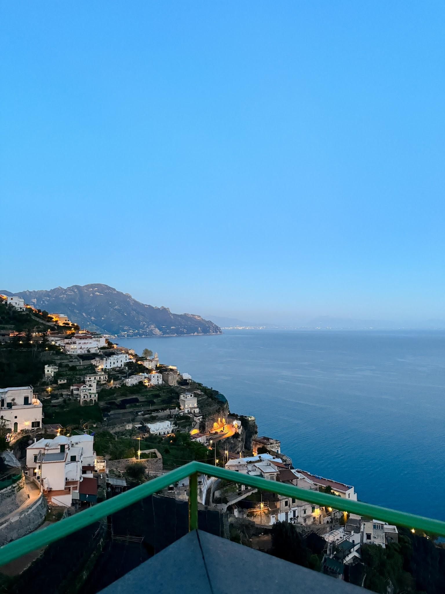 | Italy | amalfi | 4/4/2024 19:50:33 | Evening | no | | Coastal | Documenting the location | Nature | None |
3 | amalfi_image2.JPG | A smiling woman in a blue top poses at a viewpoint above the pastel hillside village of Positano, framed by bare tree branches. |  | Italy | amalfi | 4/5/2024 14:46:27 | Afternoon | yes | core_200 | Coastal | Putting myself in the frame | People | Obvious |
4 | amalfi_image3.JPG | A woman in a white shirt leans on a seafront railing with Amalfi's white hillside buildings and harbor behind her. | Italy | amalfi | 4/6/2024 18:58:51 | Evening | no | | Coastal | Putting myself in the frame | People | None | |
5 | amalfi_image4.JPG | Rows of young grapevines in a sunny hillside vineyard with mountains on the horizon. | 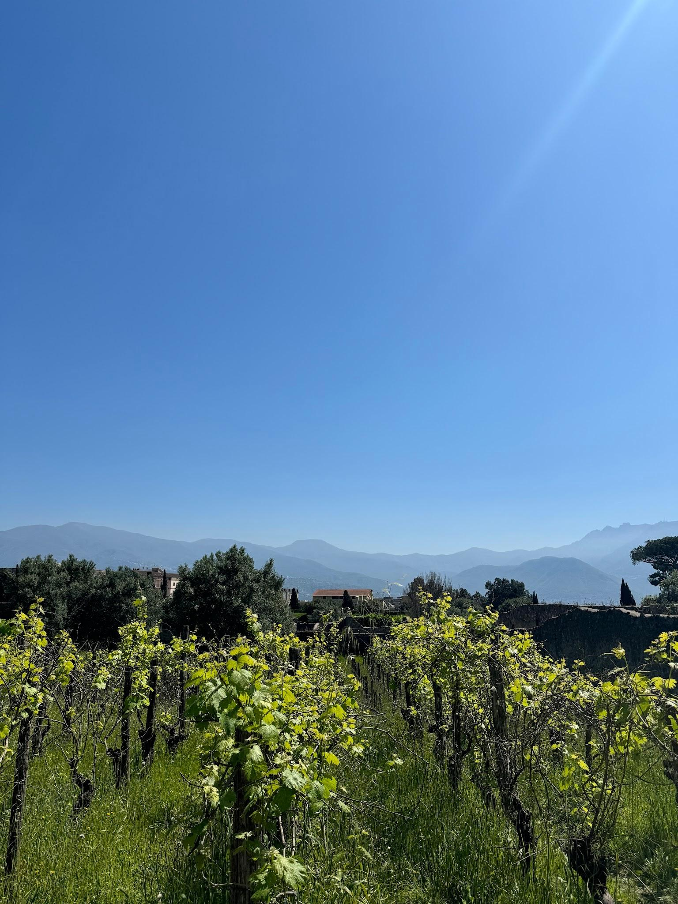 | Italy | amalfi | 4/7/2024 13:58:11 | Afternoon | no | | Nature | Documenting the location | Food & Drink | None |
6 | amalfi_image5.JPG | A hand holds lemon sorbet served in a hollowed-out lemon with a leaf, inside a gelato shop. | 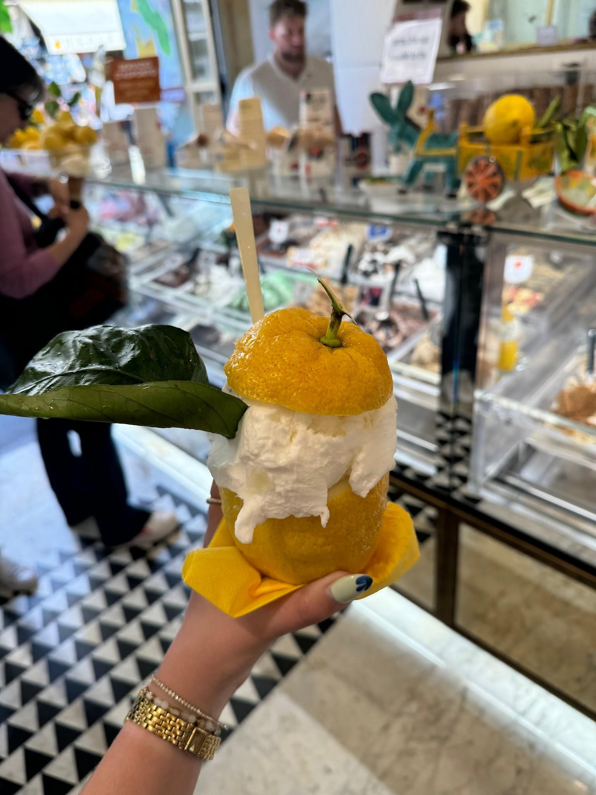 | Italy | amalfi | 4/6/2024 15:47:25 | Afternoon | yes | extra_100 | Indoor | Tasting the location | Food & Drink | Hint |
7 | amalfi_image6.JPG | A woman in sunglasses and a slogan T-shirt poses on a balcony above the hazy coastline. | Italy | amalfi | 4/8/2024 9:53:57 | Morning | yes | extra_100 | Coastal | Putting myself in the frame | People | Hint | |
8 | amalfi_image7.JPG | A glass of white spritz with mint and a straw on a patterned café table. | 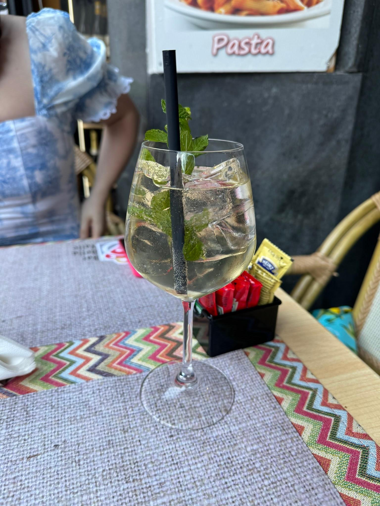 | Italy | amalfi | 4/6/2024 17:07:11 | Evening | yes | core_200 | Indoor | Tasting the location | Food & Drink | None |
9 | amalfi_image8.JPG | Point-of-view shot of legs on a dark sand beach looking out at the sea under a bright, hazy sun. |  | Italy | amalfi | 4/6/2024 11:45:18 | Morning | yes | core_200 | Coastal | Documenting the location | Nature | None |
10 | amalfi_image9.JPG | A seafood dinner of squid-ink pasta and mussels with red wine on a blue-and-white patterned tablecloth. | 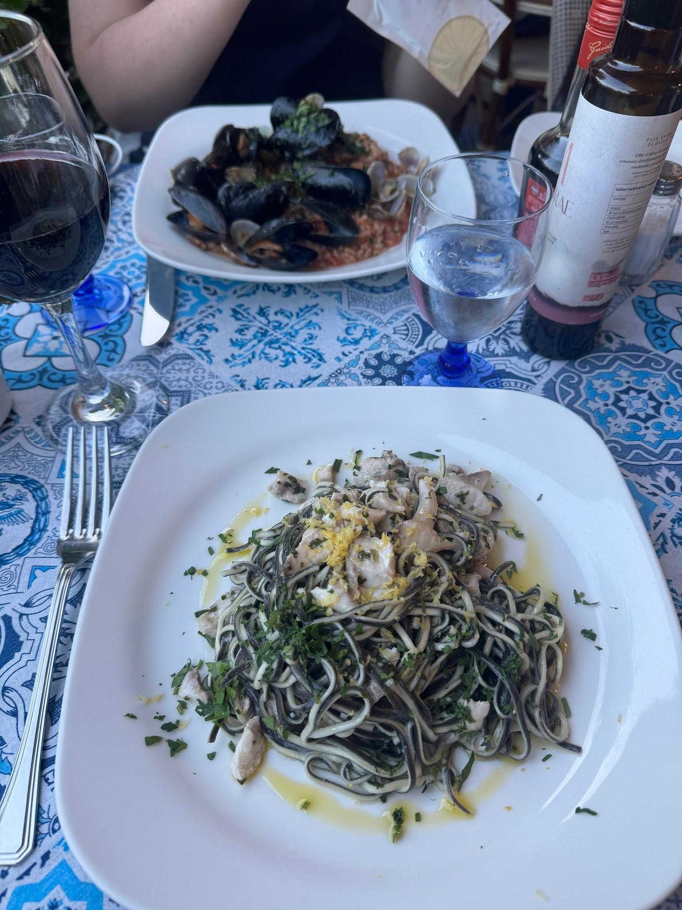 | Italy | amalfi | 4/5/2024 19:00:39 | Evening | no | | Indoor | Tasting the location | Food & Drink | None |
11 | amalfi_image10.JPG | View from inside a crowded bus as it passes another SITA bus on a narrow coastal road. |  | Italy | amalfi | 4/4/2024 16:51:11 | Afternoon | yes | extra_100 | Indoor | Everyday life | None/Other | None |
12 | amalfi_image11.JPG | A hand holds up a quilted patchwork tote bag on a stone-paved street outside a boutique. | 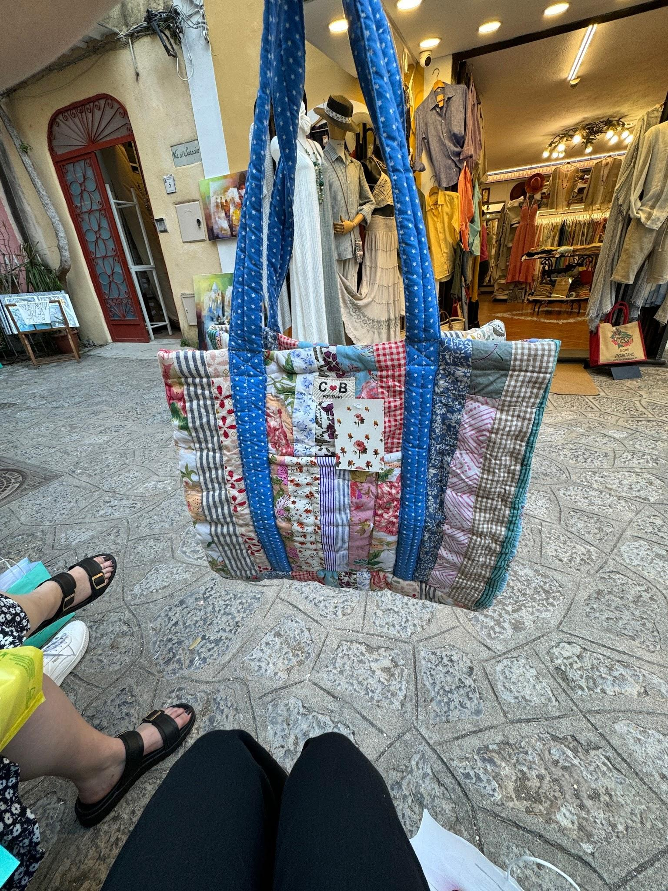 | Italy | amalfi | 4/5/2024 17:32:27 | Evening | no | | Urban | Documenting the location | Objects & Text | Hint |
13 | amalfi_image12.JPG | Inside a colorful boutique full of hanging wicker lamps, patchwork bags, and textiles. | 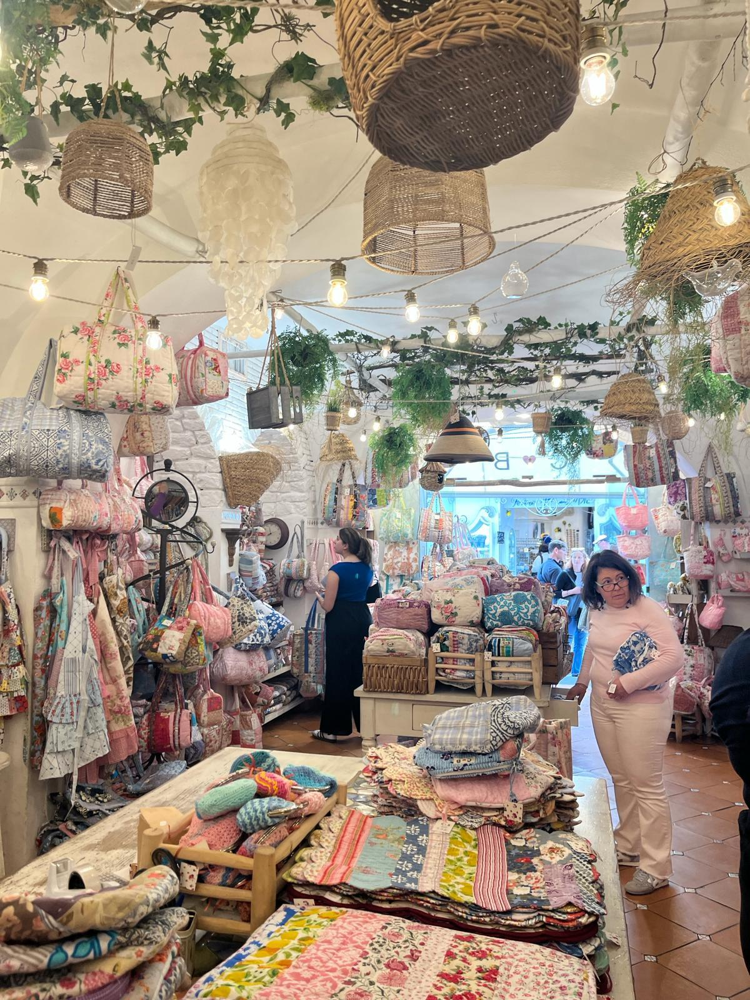 | Italy | amalfi | 4/5/2024 17:15:00 | Evening | yes | extra_100 | Indoor | Documenting the location | Objects & Text | None |
14 | amalfi_image13.JPG | A steep, narrow stone staircase climbs between whitewashed walls toward a blue sky. |  | Italy | amalfi | 4/4/2024 17:30:16 | Evening | yes | core_200 | Urban | Documenting the location | Built | None |
15 | amalfi_image14.JPG | A person reclines on a deck chair on a shaded terrace overlooking misty sea cliffs. |  | Italy | amalfi | 4/8/2024 9:52:16 | Morning | yes | core_200 | Coastal | Documenting the location | Nature | None |
16 | amalfi_image15.JPG | A woman in a blue top, seen from behind, looks out from a railing over Positano's hillside houses and beach. | 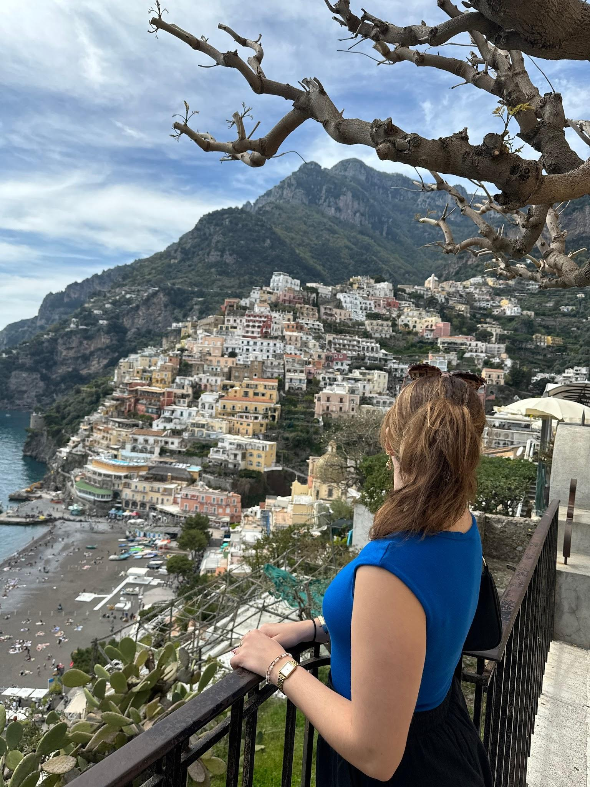 | Italy | amalfi | 4/5/2024 14:46:22 | Afternoon | no | | Coastal | Putting myself in the frame | People | None |
17 | amalfi_image16.JPG | A narrow shopping lane under a wooden pergola with linen clothes on display and people walking by. | 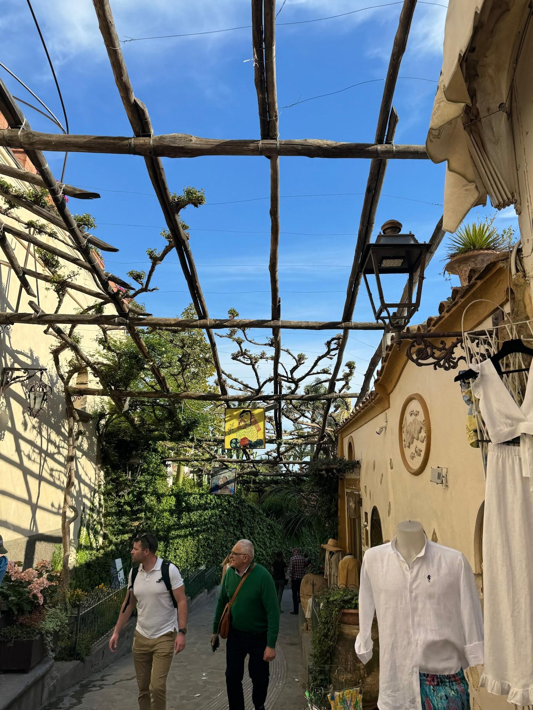 | Italy | amalfi | 4/5/2024 17:07:41 | Evening | yes | core_200 | Urban | Documenting the location | Built | None |
18 | amalfi_image17.JPG | A woman reaches up to pet a fluffy white cat lounging on a wall among potted flowers. | 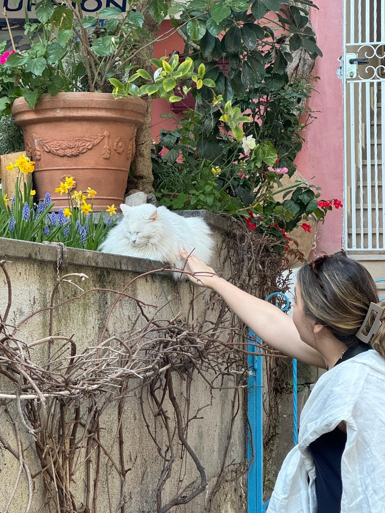 | Italy | amalfi | 4/5/2024 17:21:01 | Evening | yes | extra_100 | Urban | Documenting the location | Nature | None |
19 | amalfi_image18.JPG | A dark sand beach dotted with people near the water under a blue sky with wispy clouds. | 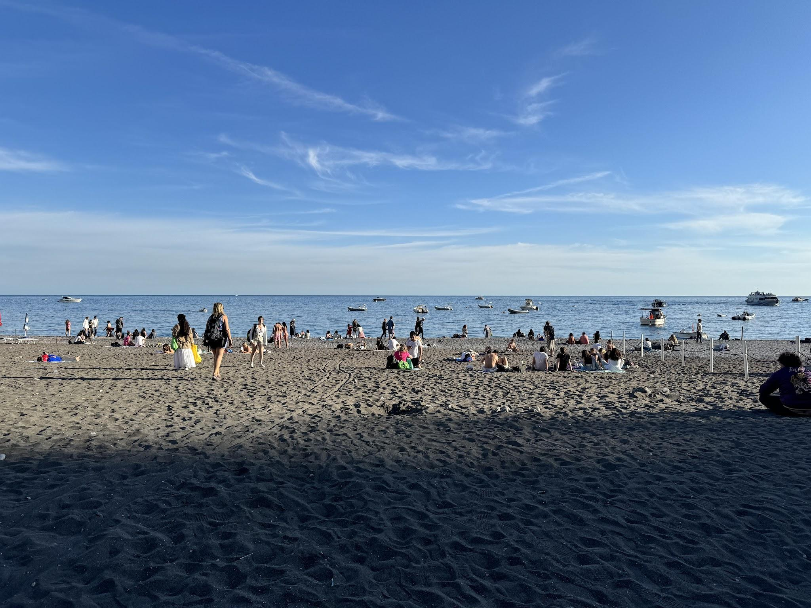 | Italy | amalfi | 4/5/2024 17:44:42 | Evening | yes | core_200 | Coastal | Documenting the location | Nature | None |
20 | amalfi_image19.JPG | An illuminated vintage 'Ristorante Mediterraneo' sign at night. |  | Italy | amalfi | 4/5/2024 20:14:30 | Evening | yes | core_200 | Urban | Documenting the location | Objects & Text | None |
21 | amalfi_image20.JPG | A smiling woman in a black dress and white shirt by the harbor with Amalfi's cliffs and white buildings behind. | 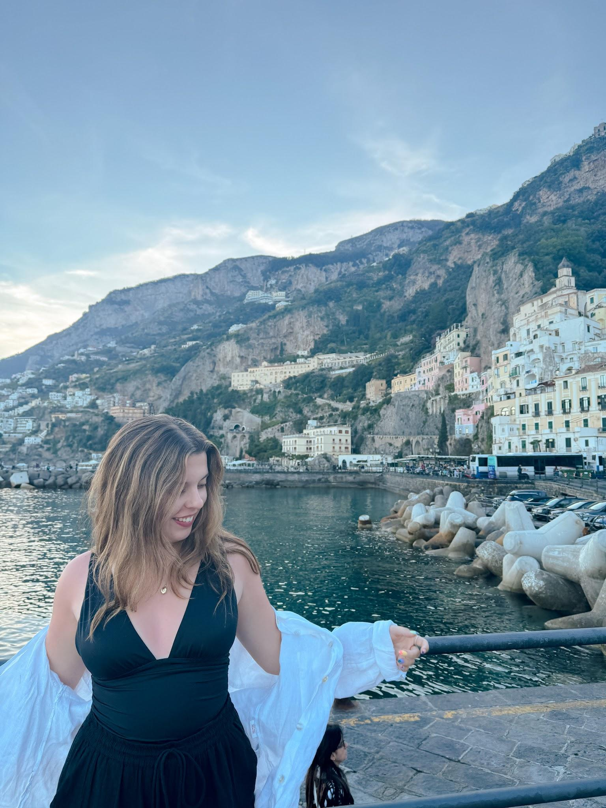 | Italy | amalfi | 4/6/2024 18:52:28 | Evening | no | | Coastal | Putting myself in the frame | People | None |
22 | amalfi_image21.JPG | Sun breaking through clouds over the sea, seen from high above terraced coastal houses. | 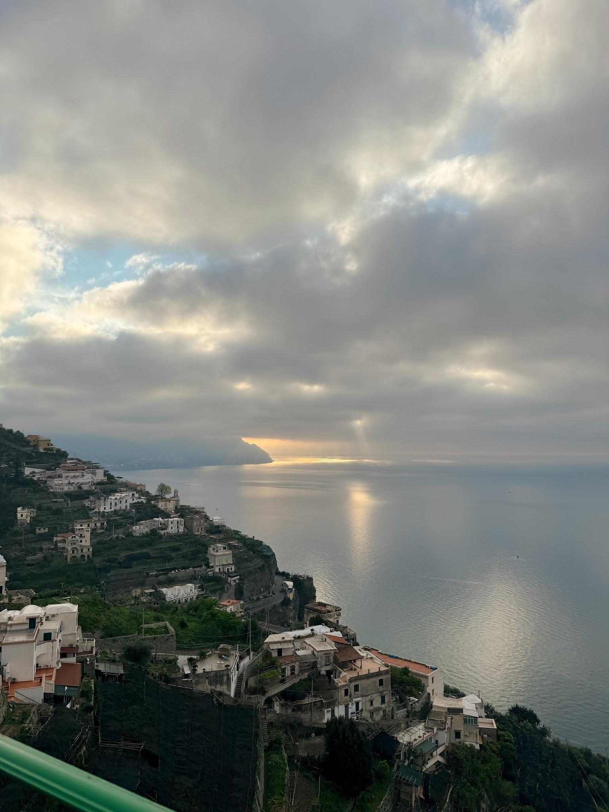 | Italy | amalfi | 4/7/2024 7:37:39 | Morning | yes | core_200 | Coastal | Documenting the location | Nature | None |
23 | amalfi_image22.JPG | Mount Vesuvius rises beyond a grassy path under a clear blue sky. | 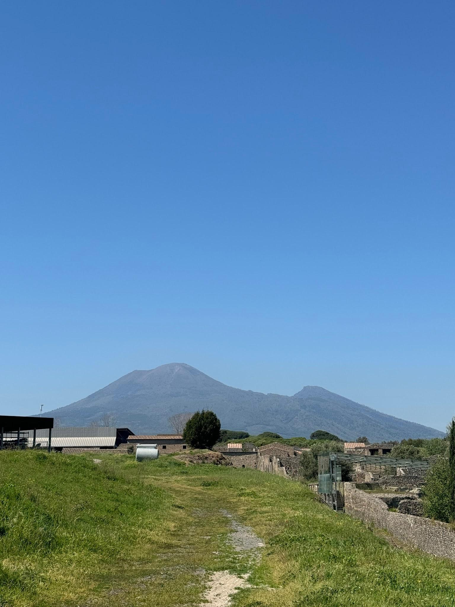 | Italy | amalfi | 4/7/2024 14:17:25 | Afternoon | no | | Nature | Documenting the location | Nature | None |
24 | amalfi_image23.JPG | Overview of the excavated stone ruins of Pompeii with mountains in the distance. |  | Italy | amalfi | 4/7/2024 15:36:31 | Afternoon | yes | core_200 | Urban | Documenting the location | Built | Obvious |
25 | barcelona_image1.JPG | Overhead view of a brunch table with eggs Benedict, avocado toast on a bagel, and drinks. | 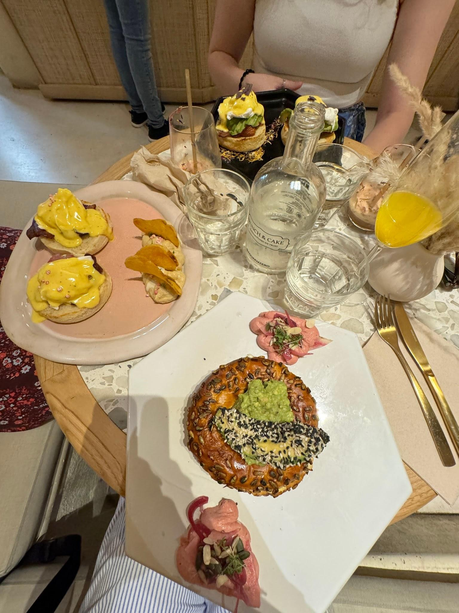 | Spain | barcelona | 5/12/2024 13:46:57 | Afternoon | no | | Indoor | Tasting the location | Food & Drink | None |
26 | barcelona_image2.JPG | The red-brick Arc de Triomf in Barcelona at the end of a palm-lined promenade with crowds. | 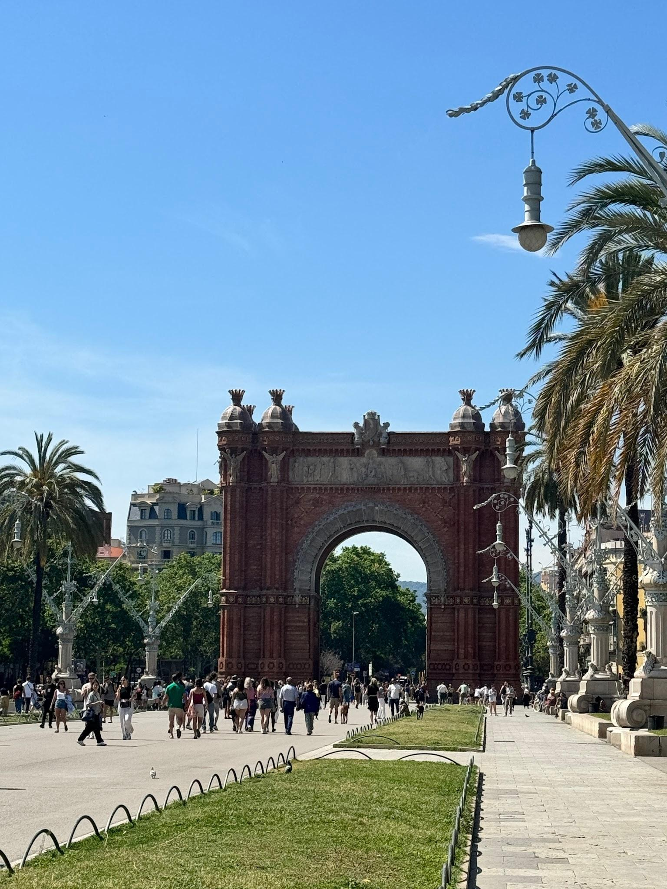 | Spain | barcelona | 5/12/2024 15:48:33 | Afternoon | yes | core_200 | Urban | Documenting the location | Built | Hint |
27 | barcelona_image3.JPG | The ornate Cascada fountain in Parc de la Ciutadella reflected in a green pond. | 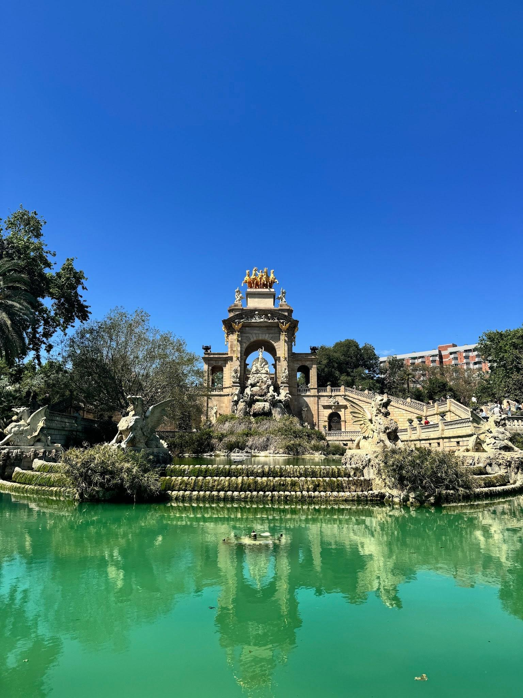 | Spain | barcelona | 5/12/2024 16:02:39 | Afternoon | yes | extra_100 | Nature | Documenting the location | Built | Hint |
28 | barcelona_image4.JPG | Three friends take a smiling selfie in front of the Cascada fountain in Parc de la Ciutadella. | 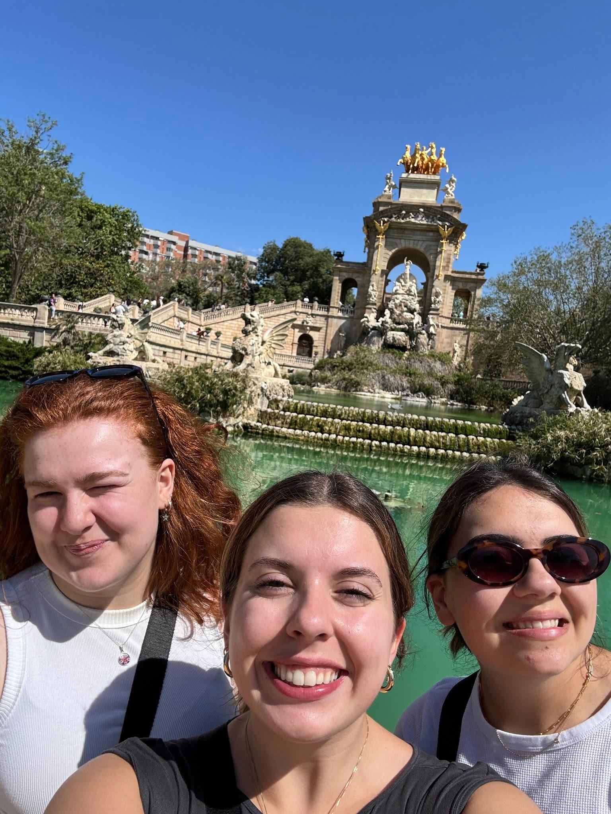 | Spain | barcelona | 5/12/2024 16:03:02 | Afternoon | no | | Urban | Sharing the experience | People | None |
29 | barcelona_image5.JPG | A red domed palace framed by palm trees and greenery beside a boating lake in Parc de la Ciutadella. | 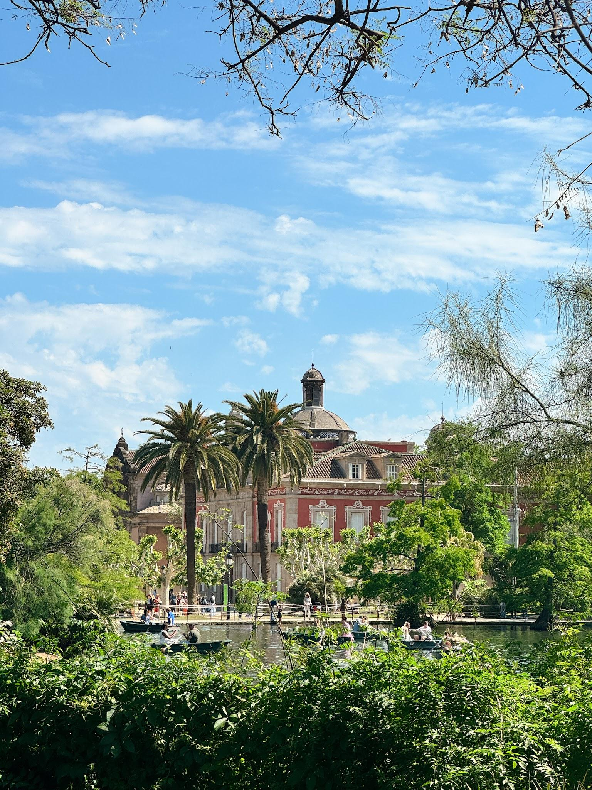 | Spain | barcelona | 5/12/2024 16:05:44 | Afternoon | no | | Nature | Documenting the location | Built | None |
30 | barcelona_image6.JPG | Looking up at a shopfront entrance decorated with pink and white flower garlands. | 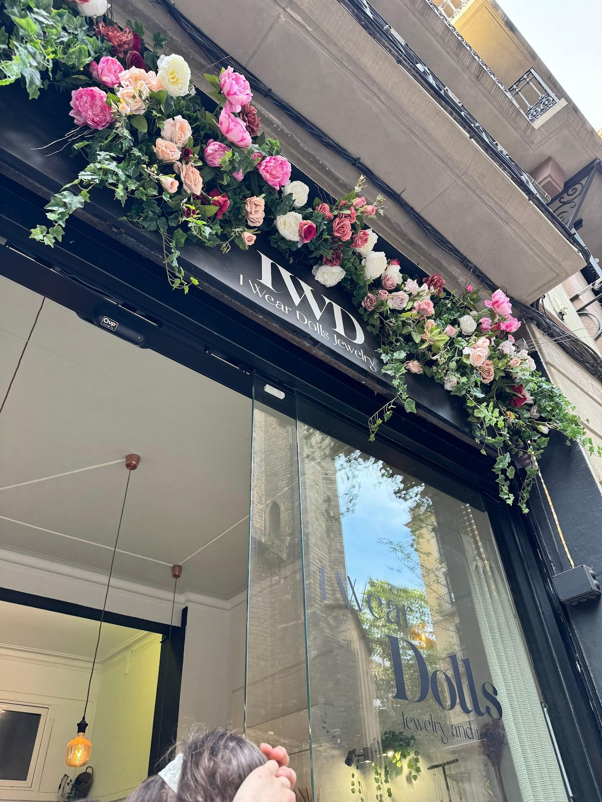 | Spain | barcelona | 5/12/2024 17:34:08 | Evening | no | | Indoor | Documenting the location | Nature | None |
31 | barcelona_image7.JPG | Three rustic bowls of salads and grain bowls, one with sliced steak and sourdough, on a wooden table. |  | Spain | barcelona | 5/12/2024 18:57:27 | Evening | yes | core_200 | Indoor | Tasting the location | Food & Drink | None |
32 | barcelona_image8.JPG | A tray of churros with three cups of thick hot chocolate on a café table. |  | Spain | barcelona | 5/12/2024 20:10:47 | Evening | yes | core_200 | Indoor | Tasting the location | Food & Drink | None |
33 | barcelona_image9.JPG | Brunch of salmon eggs Benedict with salad and potatoes, pancakes, orange juice, and iced coffees. | 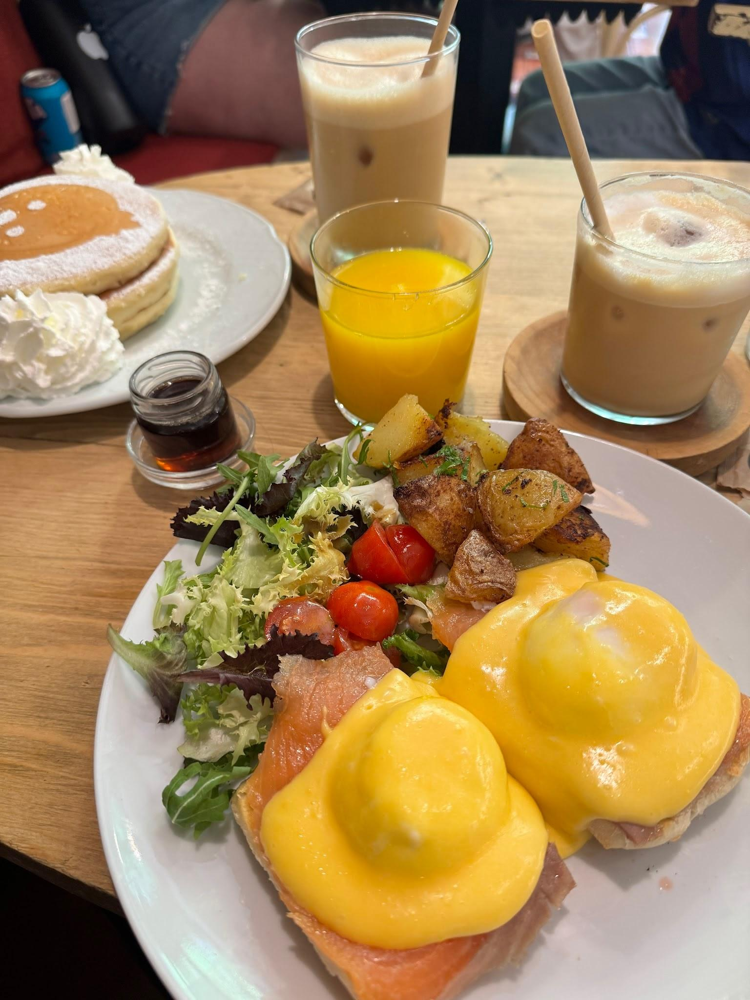 | Spain | barcelona | 5/13/2024 11:29:13 | Morning | no | | Indoor | Tasting the location | Food & Drink | None |
34 | barcelona_image10.JPG | View from Park Güell over palm trees and a spired gatehouse toward the Barcelona skyline. | 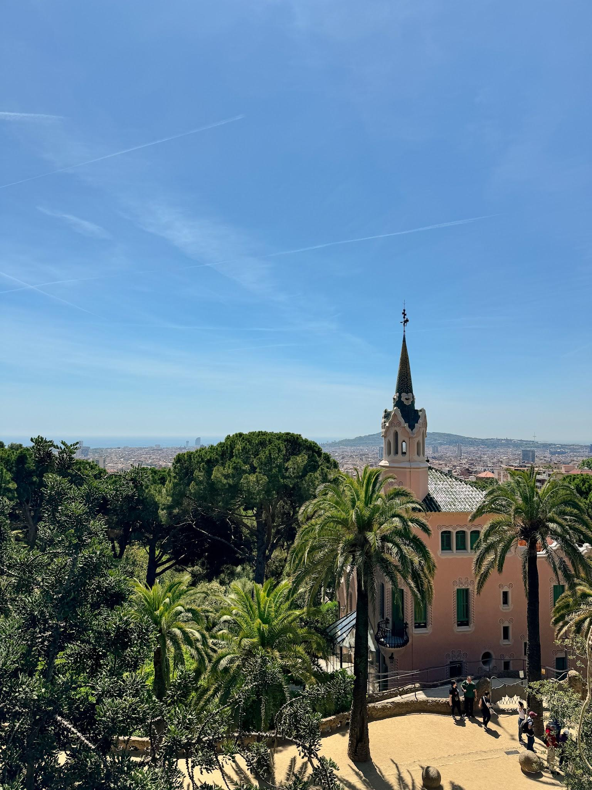 | Spain | barcelona | 5/13/2024 12:44:27 | Afternoon | no | | Nature | Documenting the location | Nature | None |
35 | barcelona_image11.JPG | Close-up of the colorful broken-tile mosaic on Park Güell's serpentine bench. |  | Spain | barcelona | 5/13/2024 13:03:33 | Afternoon | yes | core_200 | Nature | Documenting the location | Objects & Text | Hint |
36 | barcelona_image12.JPG | A woman sits on the mosaic bench at Park Güell with the gatehouse tower and city behind her. |  | Spain | barcelona | 5/13/2024 13:04:25 | Afternoon | yes | extra_100 | Urban | Putting myself in the frame | People | Obvious |
37 | barcelona_image13.JPG | Two friends smile on the mosaic bench at Park Güell with the city skyline behind them. | 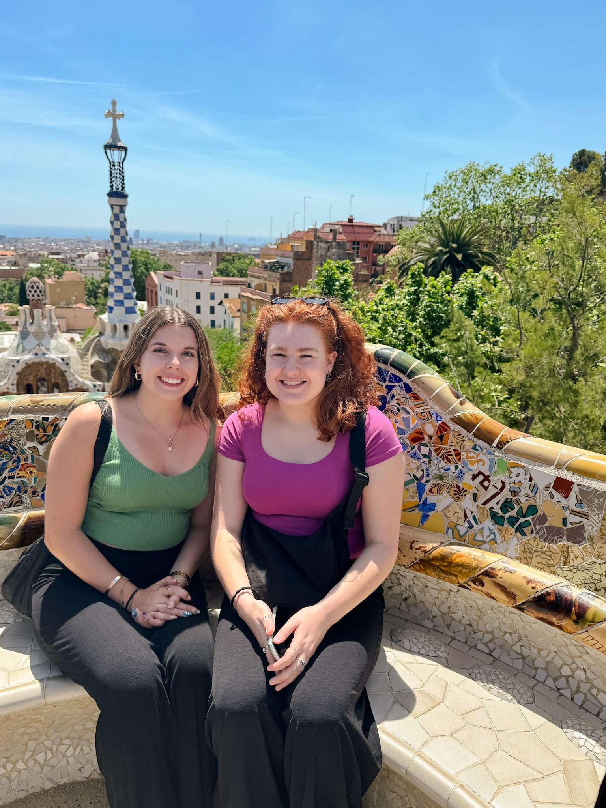 | Spain | barcelona | 5/13/2024 13:05:10 | Afternoon | no | | Urban | Sharing the experience | People | Obvious |
38 | barcelona_image14.JPG | A woman adjusts her bag on the curving mosaic bench at Park Güell, with a gatehouse and the city beyond. |  | Spain | barcelona | 5/13/2024 13:07:50 | Afternoon | yes | extra_100 | Urban | Putting myself in the frame | People | Obvious |
39 | barcelona_image15.JPG | A woman sits on the mosaic bench at Park Güell looking out over the park's trees. | 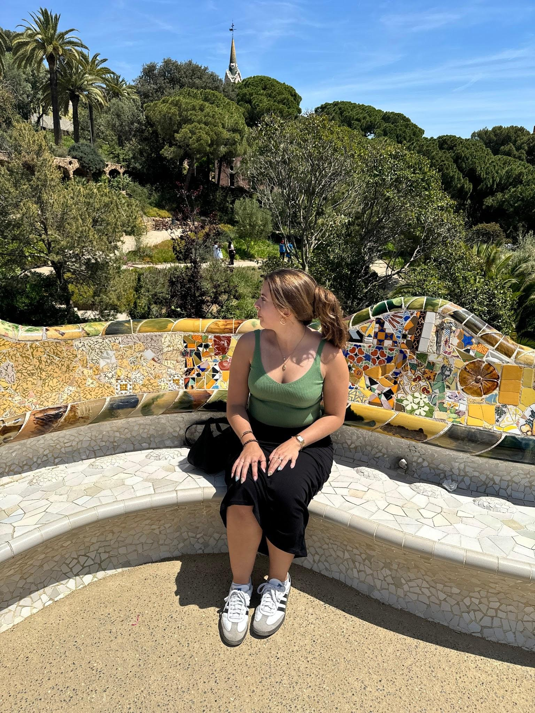 | Spain | barcelona | 5/13/2024 13:09:26 | Afternoon | yes | core_200 | Nature | Putting myself in the frame | People | Hint |
40 | barcelona_image16.JPG | Looking up at the white trencadís ceiling and mosaic medallions above the columns of Park Güell's Hypostyle Room. | 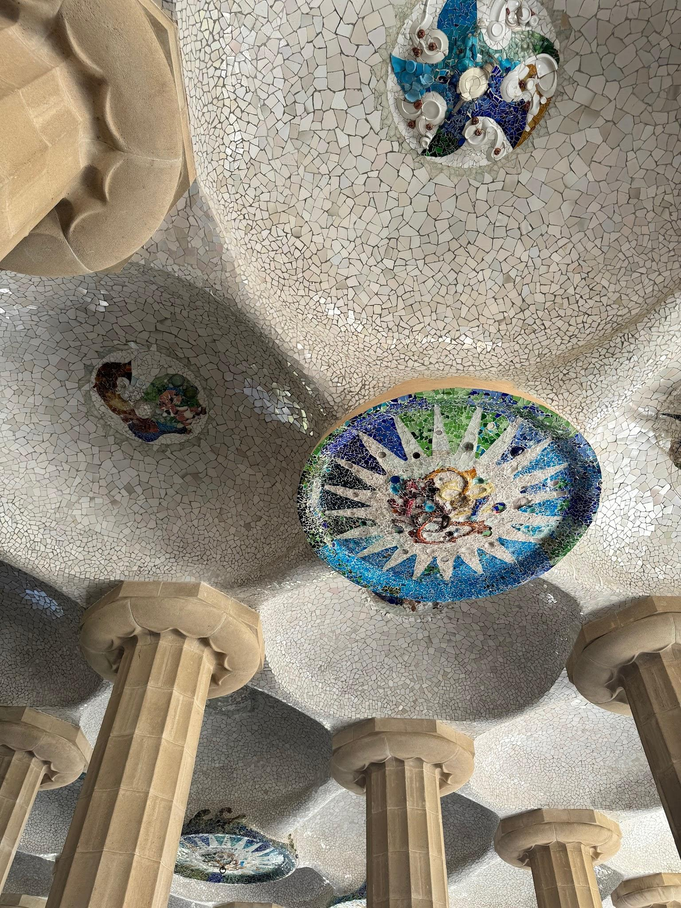 | Spain | barcelona | 5/13/2024 13:13:31 | Afternoon | yes | core_200 | Indoor | Documenting the location | Built | Hint |
41 | barcelona_image17.JPG | Tourists crowd the stairs around Park Güell's famous mosaic dragon (lizard) fountain. | 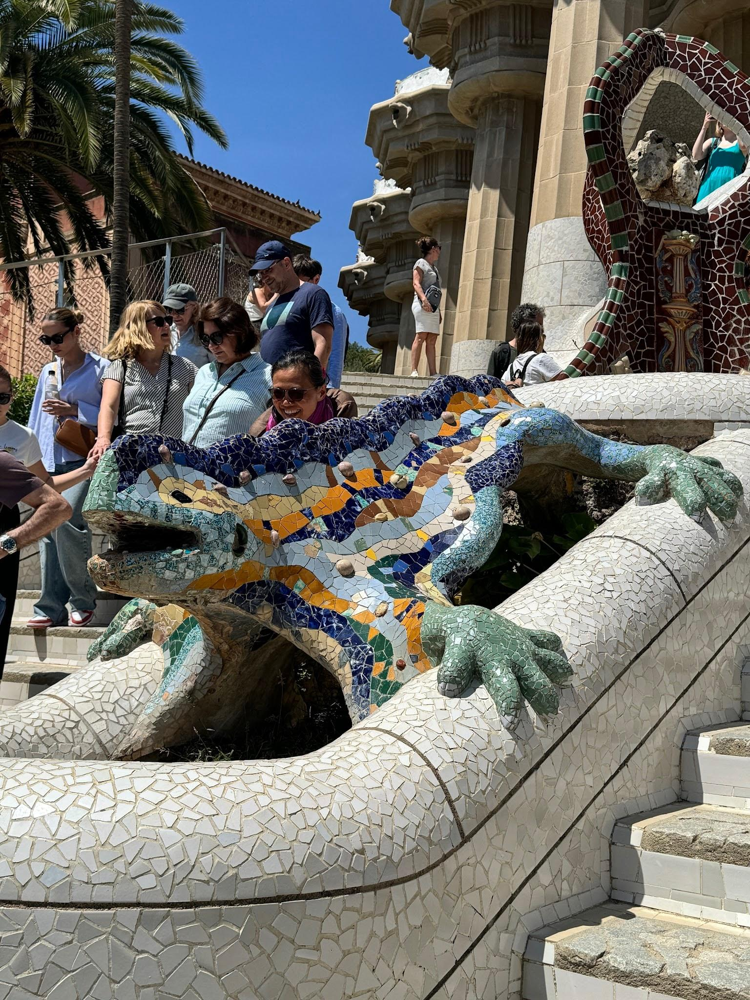 | Spain | barcelona | 5/13/2024 13:16:02 | Afternoon | yes | core_200 | Urban | Documenting the location | Built | Obvious |
42 | barcelona_image18.JPG | A white tiled wall set with decorative patterned ceramic squares at Park Güell. | 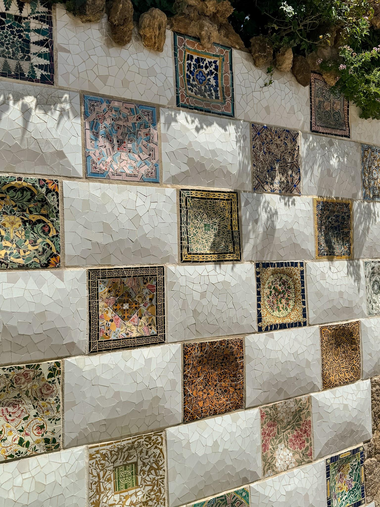 | Spain | barcelona | 5/13/2024 13:16:39 | Afternoon | no | | Urban | Documenting the location | Objects & Text | Hint |
43 | barcelona_image19.JPG | Two round mosaic medallions spelling 'Park Güell' set into a rough stone wall. | 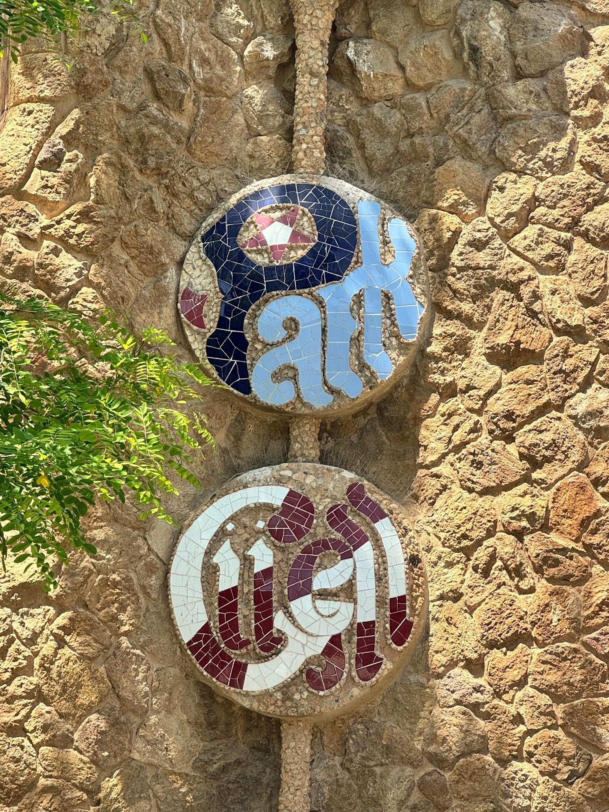 | Spain | barcelona | 5/13/2024 13:57:30 | Afternoon | no | | Urban | Documenting the location | Objects & Text | Hint |
44 | barcelona_image20.JPG | Three tapas on toasted bread with toppings including jamón and tomato, on a wooden board. | 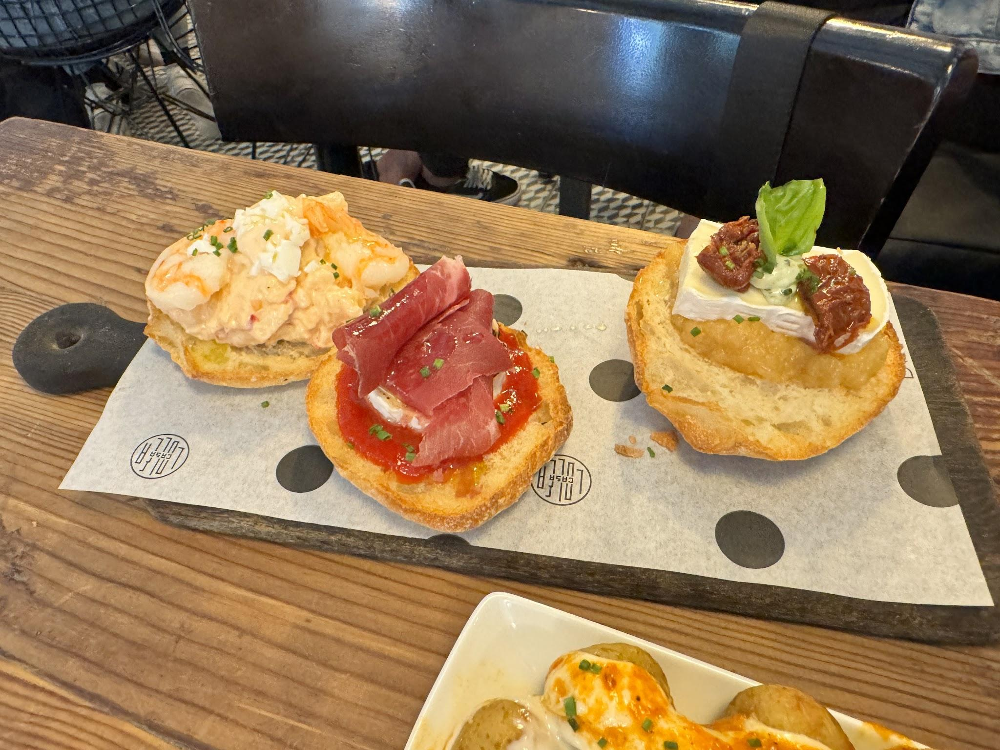 | Spain | barcelona | 5/13/2024 15:26:54 | Afternoon | yes | core_200 | Indoor | Tasting the location | Food & Drink | None |
45 | barcelona_image21.JPG | Looking up at the wavy stone facade and iron balconies of Casa Milà (La Pedrera). | 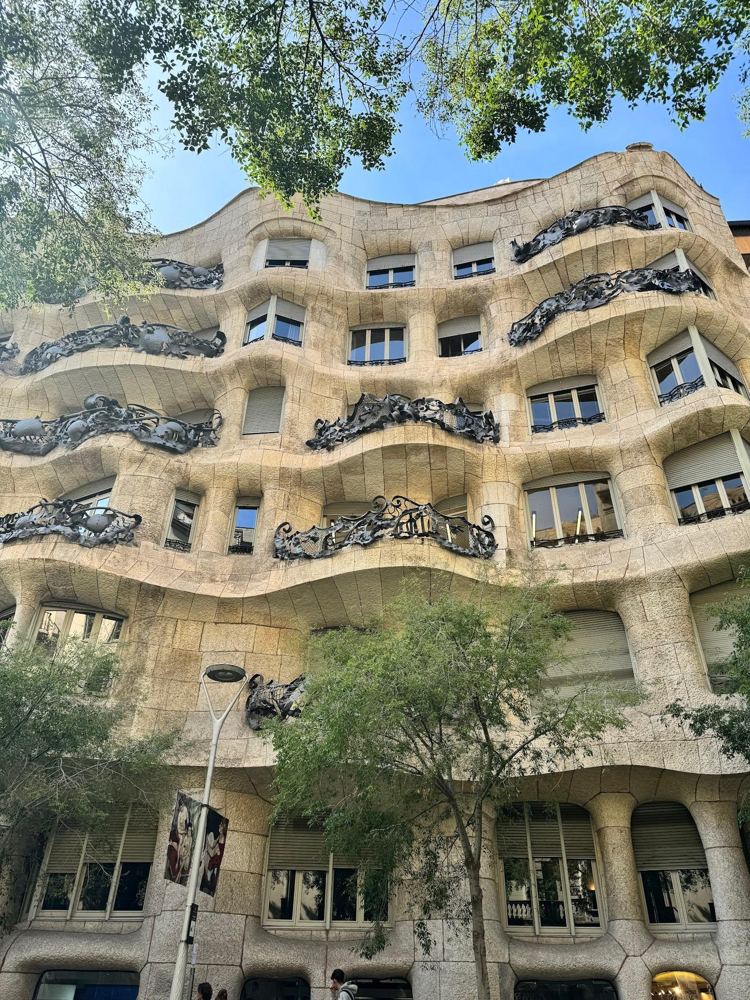 | Spain | barcelona | 5/13/2024 16:36:43 | Afternoon | no | | Urban | Documenting the location | Built | Hint |
46 | barcelona_image22.JPG | The colorful, scale-like facade of Gaudí's Casa Batlló with crowds at the entrance. | 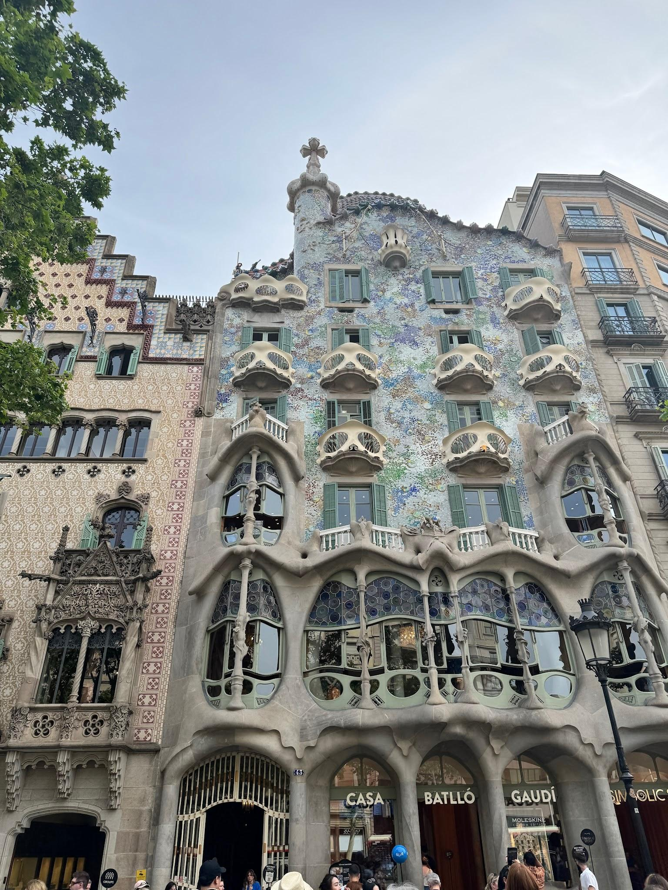 | Spain | barcelona | 5/13/2024 17:17:13 | Evening | no | | Urban | Documenting the location | Built | Obvious |
47 | barcelona_image23.JPG | Crowds gather at the entrance below the towering spires of the Sagrada Família under construction cranes. | 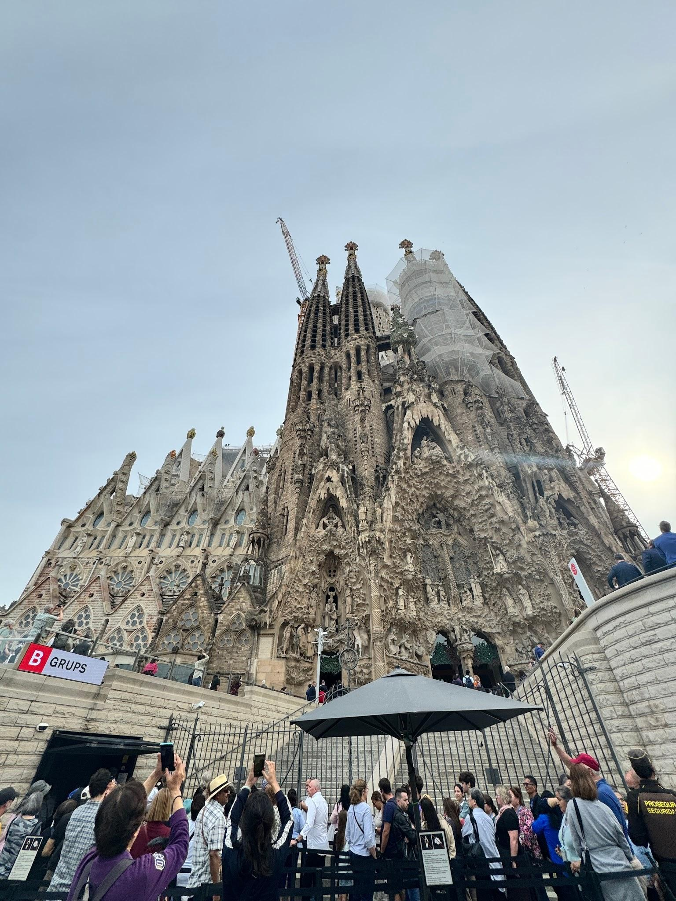 | Spain | barcelona | 5/13/2024 18:20:10 | Evening | yes | core_200 | Urban | Documenting the location | Built | Obvious |
48 | barcelona_image24.JPG | Looking up the nave of the Sagrada Família at its tree-like columns and starburst ceiling. | 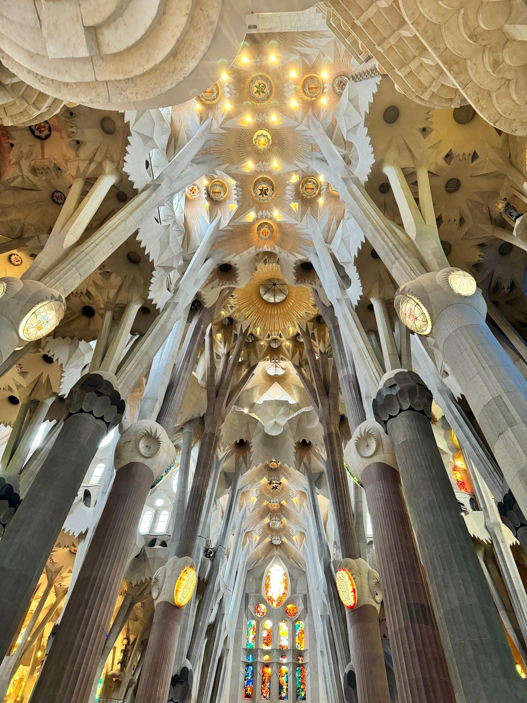 | Spain | barcelona | 5/13/2024 18:48:48 | Evening | yes | extra_100 | Indoor | Documenting the location | Built | Obvious |
49 | barcelona_image25.JPG | Upward view of the branching columns and golden, star-patterned vaults inside the Sagrada Família. |  | Spain | barcelona | 5/13/2024 18:49:47 | Evening | yes | core_200 | Indoor | Documenting the location | Built | Obvious |
50 | barcelona_image26.JPG | The angular sculpted Passion Facade of the Sagrada Família with its spires against the sky. | Spain | barcelona | 5/13/2024 19:14:46 | Evening | no | | Urban | Documenting the location | Built | Obvious | |
51 | barcelona_image27.JPG | Two colorful poke-style bowls with steak, pickled onions, and greens, plus a pink juice. |  | Spain | barcelona | 5/14/2024 12:46:55 | Afternoon | yes | extra_100 | Indoor | Tasting the location | Food & Drink | None |
52 | brussels_image1.JPG | A woman in a teal scarf stands in the Grand-Place with the Gothic Town Hall tower behind her. |  | Belgium | brussels | 2/24/2024 13:16:39 | Afternoon | yes | extra_100 | Urban | Putting myself in the frame | People | Obvious |
53 | brussels_image2.JPG | A smiling woman holds up a large goblet of dark beer inside a brick-walled Belgian pub. | 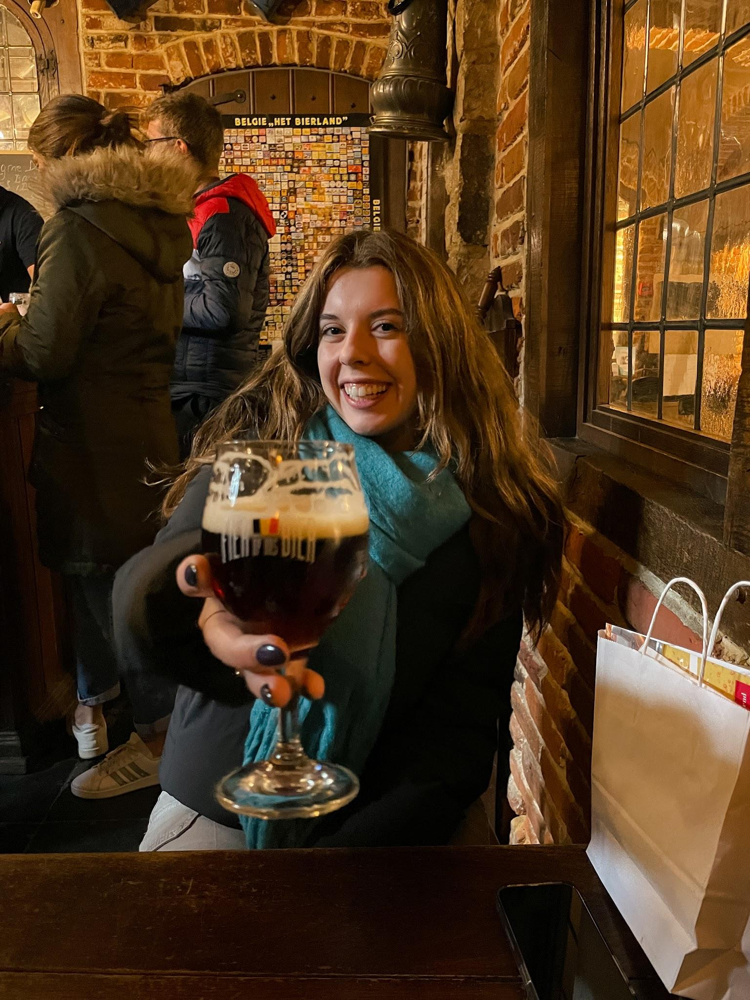 | Belgium | brussels | 2/24/2024 13:50:46 | Afternoon | no | | Indoor | Putting myself in the frame | People | None |
54 | brussels_image3.JPG | Looking down on a woman carrying a beer flight down stairs beneath vintage Belgian beer signs. | 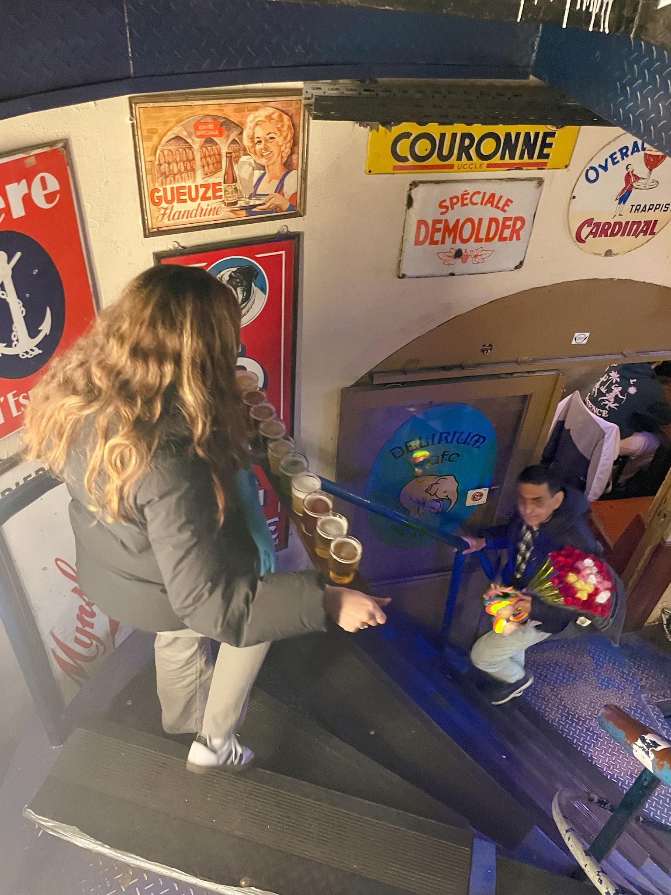 | Belgium | brussels | 2/24/2024 21:08:56 | Night | no | | Urban | Documenting the location | People | None |
55 | brussels_image4.JPG | A stack of pancakes topped with caramel and whipped cream next to a mango smoothie on a café tray. | 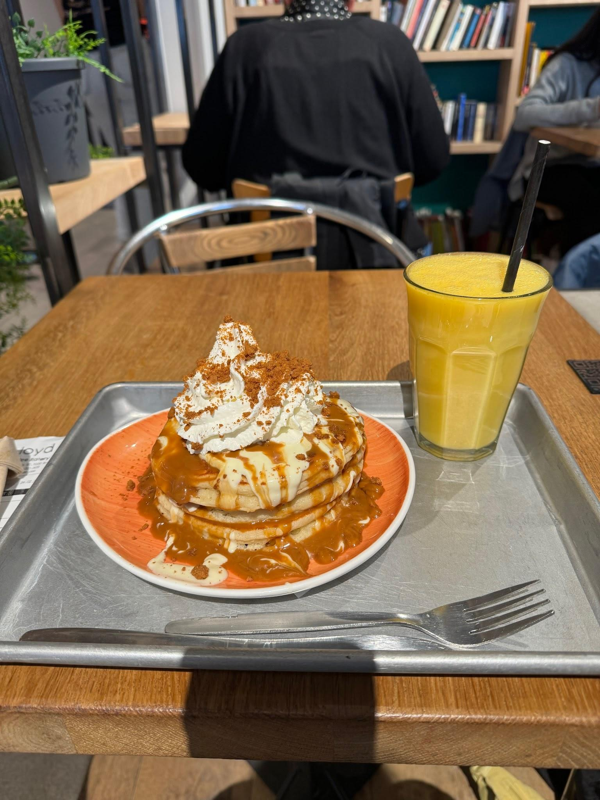 | Belgium | brussels | 2/24/2024 11:42:42 | Morning | no | | Indoor | Tasting the location | Food & Drink | None |
56 | brussels_image5.JPG | The glass-roofed Galeries Royales Saint-Hubert shopping arcade full of people. |  | Belgium | brussels | 2/24/2024 12:23:25 | Afternoon | yes | core_200 | Indoor | Documenting the location | Built | None |
57 | brussels_image6.JPG | The Gothic Brussels Town Hall towering over a busy Grand-Place on a cloudy day. |  | Belgium | brussels | 2/24/2024 13:12:42 | Afternoon | yes | extra_100 | Urban | Documenting the location | Built | Obvious |
58 | brussels_image7.JPG | Three friends in scarves pose in the Grand-Place in front of the Town Hall. | 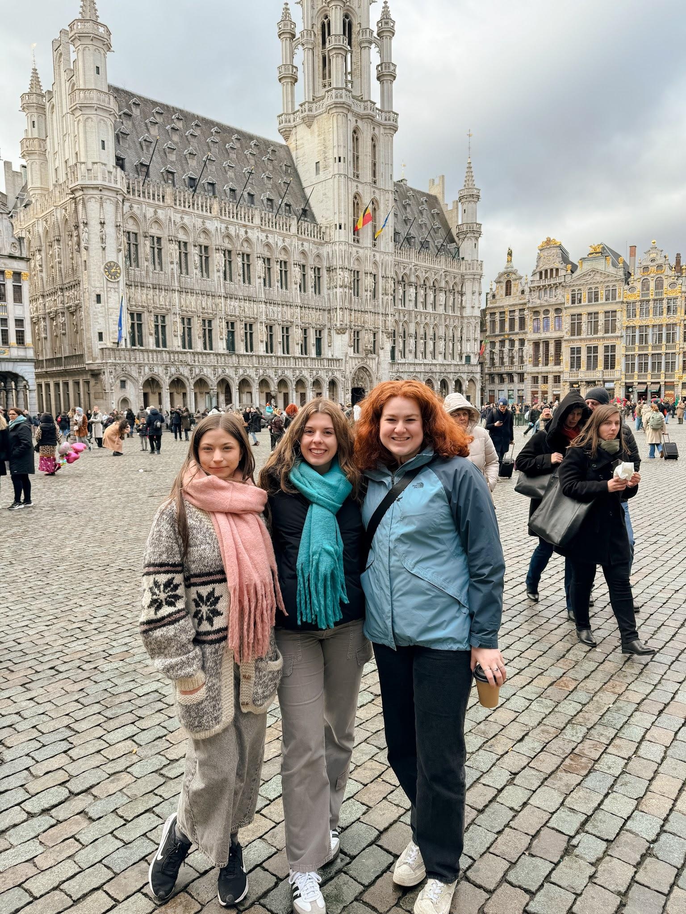 | Belgium | brussels | 2/24/2024 13:13:51 | Afternoon | yes | extra_100 | Urban | Sharing the experience | People | Obvious |
59 | brussels_image8.JPG | Four friends pose together beside stainless steel brewing tanks in a brewery. |  | Belgium | brussels | 2/24/2024 13:45:15 | Afternoon | yes | core_200 | Indoor | Sharing the experience | People | None |
60 | brussels_image9.JPG | Tall stained glass windows rising behind a balcony inside a Gothic cathedral. | 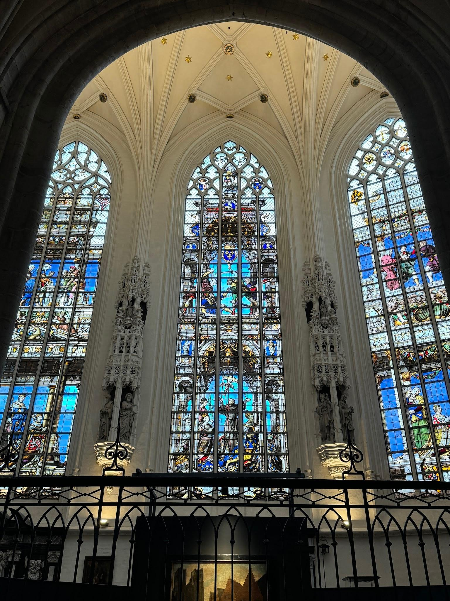 | Belgium | brussels | 2/24/2024 14:40:01 | Afternoon | no | | Indoor | Documenting the location | Built | None |
61 | brussels_image10.JPG | A long flight of colorful beer tasters on a graffiti-carved round wooden table. |  | Belgium | brussels | 2/24/2024 21:29:00 | Night | yes | extra_100 | Indoor | Tasting the location | Food & Drink | None |
62 | brussels_image11.JPG | Two friends stand on a rooftop terrace with the Brussels skyline and clouds behind them. | 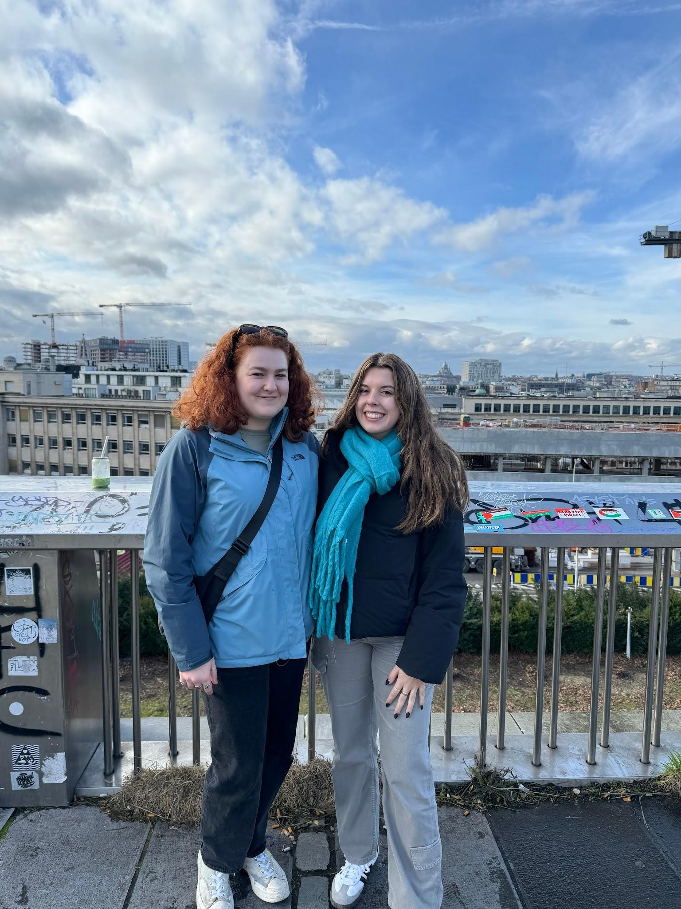 | Belgium | brussels | 2/24/2024 15:19:57 | Afternoon | yes | core_200 | Urban | Sharing the experience | People | None |
63 | brussels_image12.JPG | A sesame-bun burger with fries, ketchup, and a pint of beer on a wooden table. |  | Belgium | brussels | 2/24/2024 19:48:22 | Evening | yes | core_200 | Indoor | Tasting the location | Food & Drink | None |
64 | brussels_image13.JPG | Neon signs glow over the crowded entrance of the Delirium bar on a narrow street at night. | 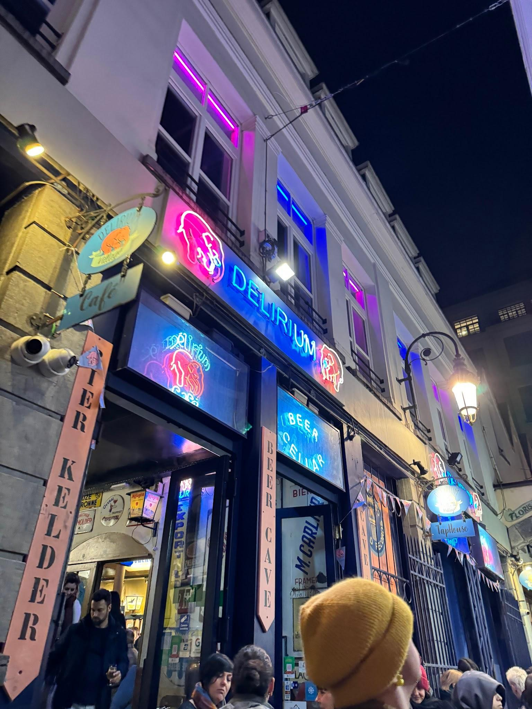 | Belgium | brussels | 2/24/2024 20:38:02 | Evening | yes | core_200 | Urban | Documenting the location | Built | Hint |
65 | brussels_image14.JPG | A chalkboard beer menu listing dozens of Belgian beers above a crowded bar. |  | Belgium | brussels | 2/24/2024 20:53:51 | Evening | yes | core_200 | Indoor | Documenting the location | Objects & Text | None |
66 | brussels_image15.JPG | Two friends clink small beer glasses in a bar lit by glowing vintage beer signs. | 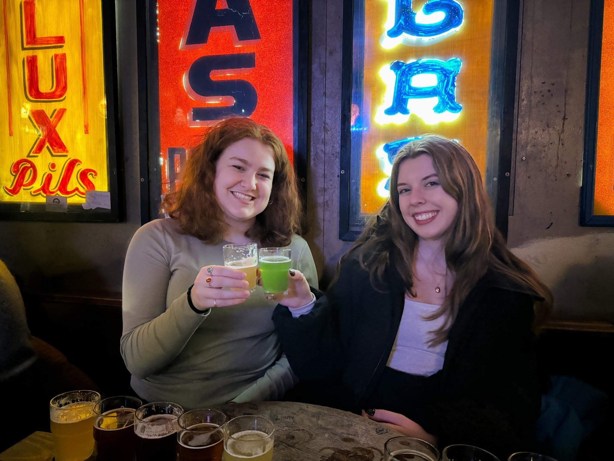 | Belgium | brussels | 2/24/2024 21:24:03 | Night | no | | Indoor | Sharing the experience | People | None |
67 | brussels_image16.JPG | Brunch of eggs Benedict on a waffle with salad, plus a matcha latte, at the Woodpecker café. | 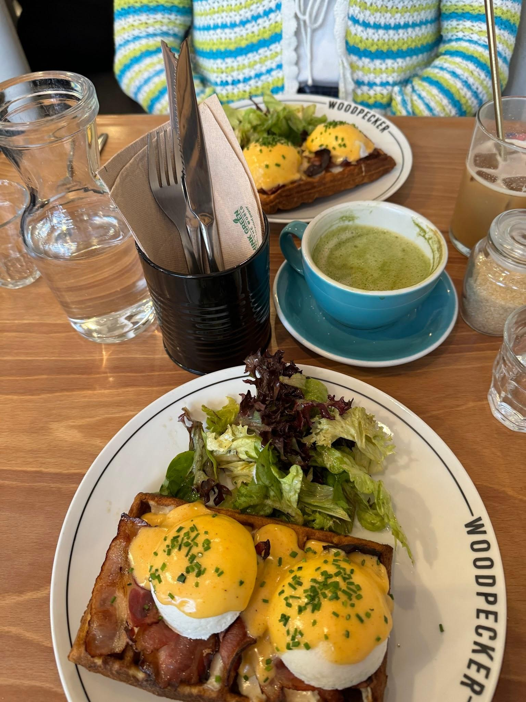 | Belgium | brussels | 2/25/2024 12:04:48 | Afternoon | yes | core_200 | Indoor | Tasting the location | Food & Drink | None |
68 | brussels_image17.JPG | Three friends pose inside a sphere of the Atomium lit in red and pink light. | 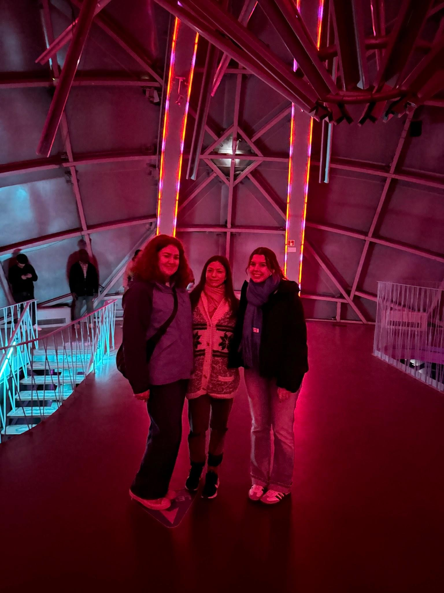 | Belgium | brussels | 2/25/2024 15:14:15 | Afternoon | yes | extra_100 | Indoor | Sharing the experience | People | None |
69 | brussels_image18.JPG | Visitors look up at a ring of glowing light tubes inside one of the Atomium's spheres. | 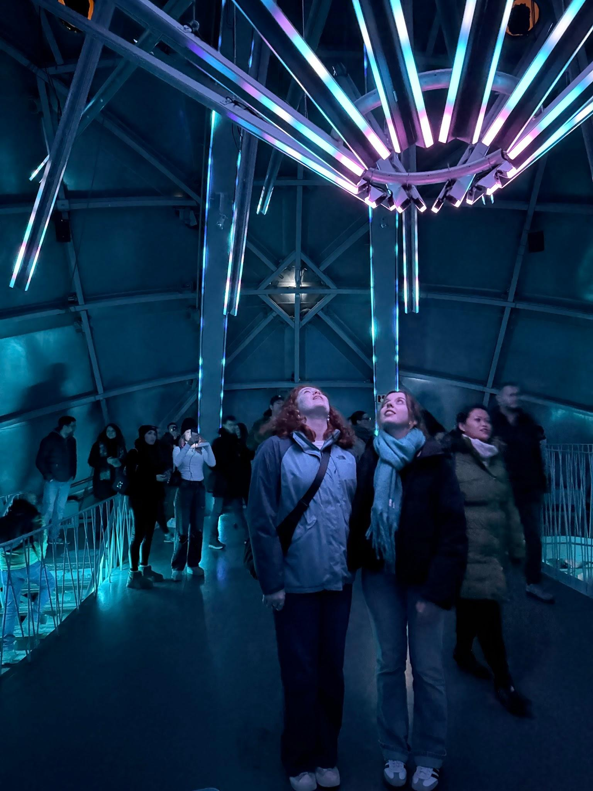 | Belgium | brussels | 2/25/2024 15:17:28 | Afternoon | yes | core_200 | Indoor | Sharing the experience | Built | None |
70 | brussels_image19.JPG | Two Belgian waffles in paper trays, one with chocolate and crispy pearls, one with whipped cream. | 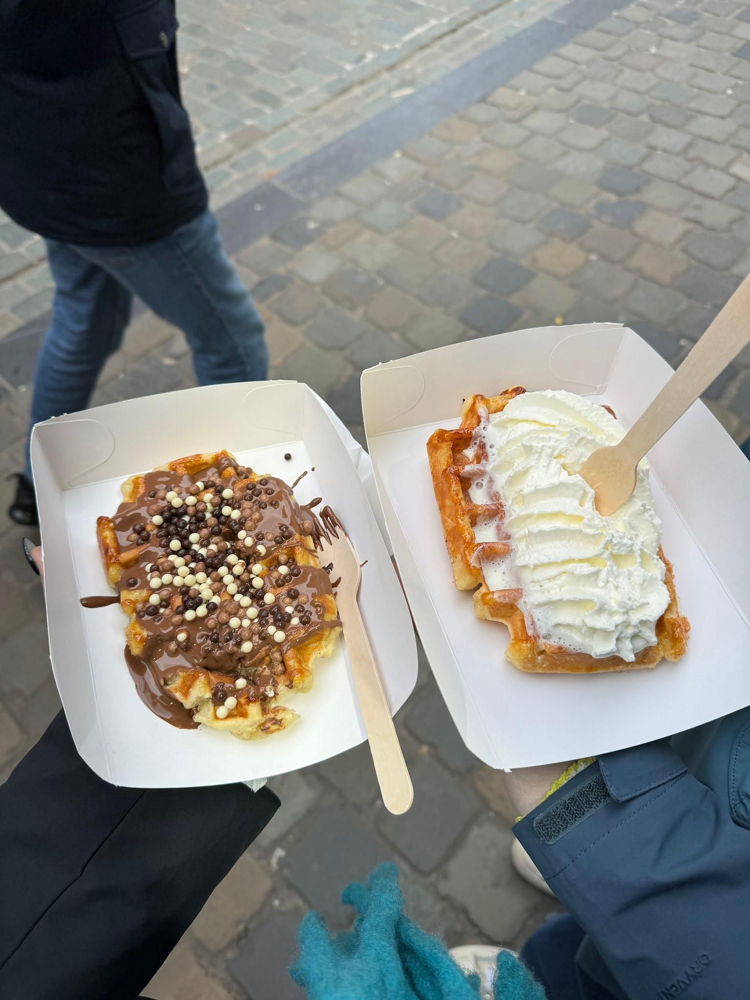 | Belgium | brussels | 2/25/2024 16:47:43 | Afternoon | no | | Urban | Tasting the location | Food & Drink | None |
71 | brussels_image20.JPG | Looking up at the shiny steel spheres of the Atomium against a cloudy sky. |  | Belgium | brussels | 2/25/2024 15:45:01 | Afternoon | yes | core_200 | Urban | Documenting the location | Built | Obvious |
72 | cinque_image1.JPG | The colorful cliffside village of Manarola above crashing waves in Cinque Terre. | 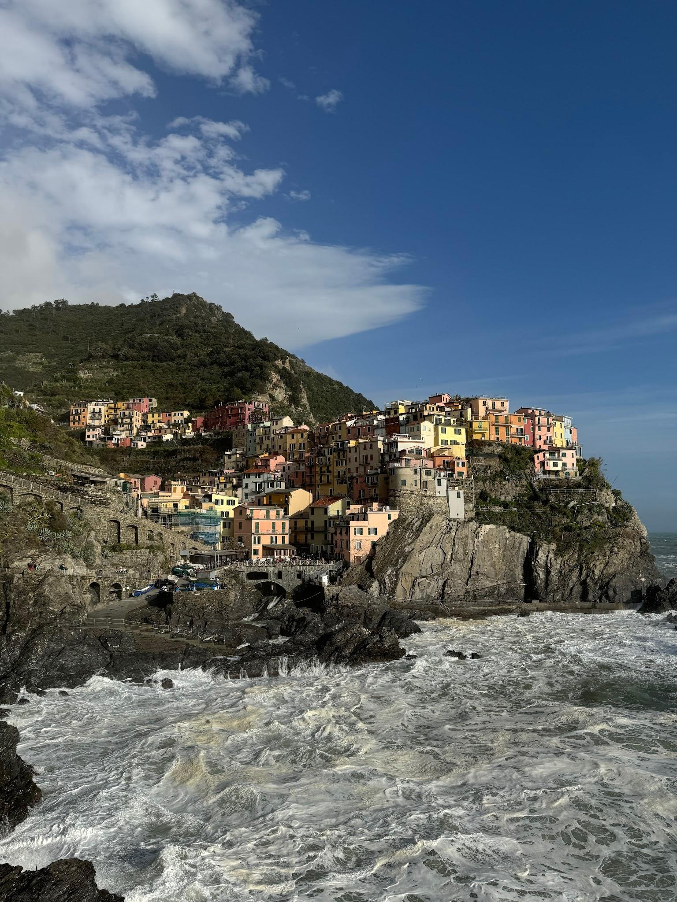 | Italy | cinque | 3/28/2024 16:43:56 | Afternoon | yes | extra_100 | Coastal | Documenting the location | Built | Obvious |
73 | cinque_image2.JPG | A tunnel wall covered in hundreds of hand-painted ceramic tiles. |  | Italy | cinque | 3/28/2024 17:06:31 | Evening | yes | core_200 | Indoor | Documenting the location | Objects & Text | None |
74 | cinque_image3.JPG | A smiling woman with a blue sweater over her shoulders sits on a green bench in the sun. |  | Italy | cinque | 3/28/2024 16:37:47 | Afternoon | yes | extra_100 | Nature | Putting myself in the frame | People | None |
75 | cinque_image4.JPG | Riomaggiore's stacked red, orange, and yellow houses rise above a rough sea inlet. |  | Italy | cinque | 3/28/2024 17:16:21 | Evening | yes | extra_100 | Coastal | Documenting the location | Built | Obvious |
76 | cinque_image5.JPG | Two friends pose at a crowded viewpoint in front of Riomaggiore's colorful houses. |  | Italy | cinque | 3/28/2024 17:21:32 | Evening | yes | core_200 | Coastal | Sharing the experience | People | Obvious |
77 | cinque_image6.JPG | A woman in a blue sweater walks down a narrow alley between pastel buildings and plants. | 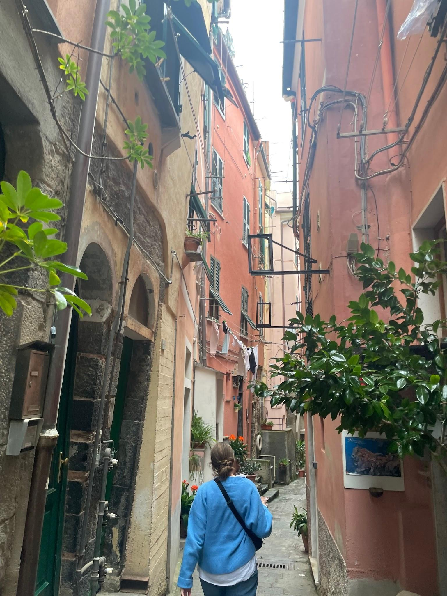 | Italy | cinque | 3/28/2024 13:51:28 | Afternoon | no | | Urban | Documenting the location | Built | None |
78 | cinque_image7.JPG | A woman in a blue sweater walks up a stone alley past a pixel-art mural of a walking figure. | 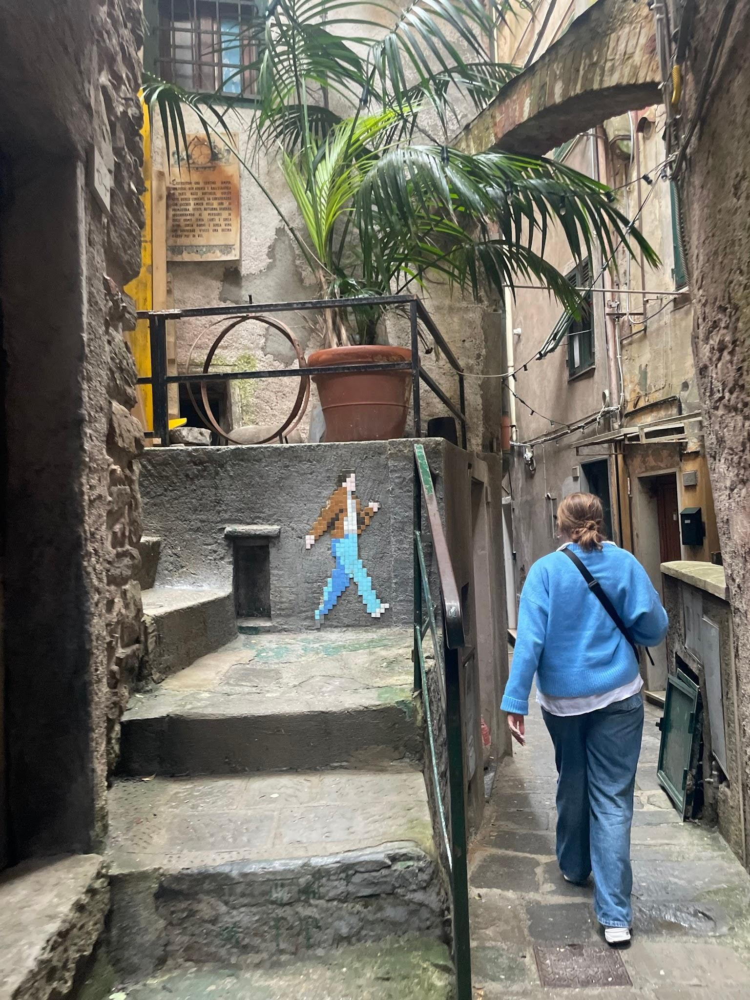 | Italy | cinque | 3/28/2024 13:53:51 | Afternoon | no | | Indoor | Sharing the experience | People | None |
79 | cinque_image8.JPG | A quiet main street lined with pastel buildings with green shutters and shop awnings. |  | Italy | cinque | 3/28/2024 12:08:56 | Afternoon | yes | core_200 | Urban | Documenting the location | Built | None |
80 | cinque_image9.JPG | Two friends take a mirror selfie in an ornate old mirror propped against a wall. | 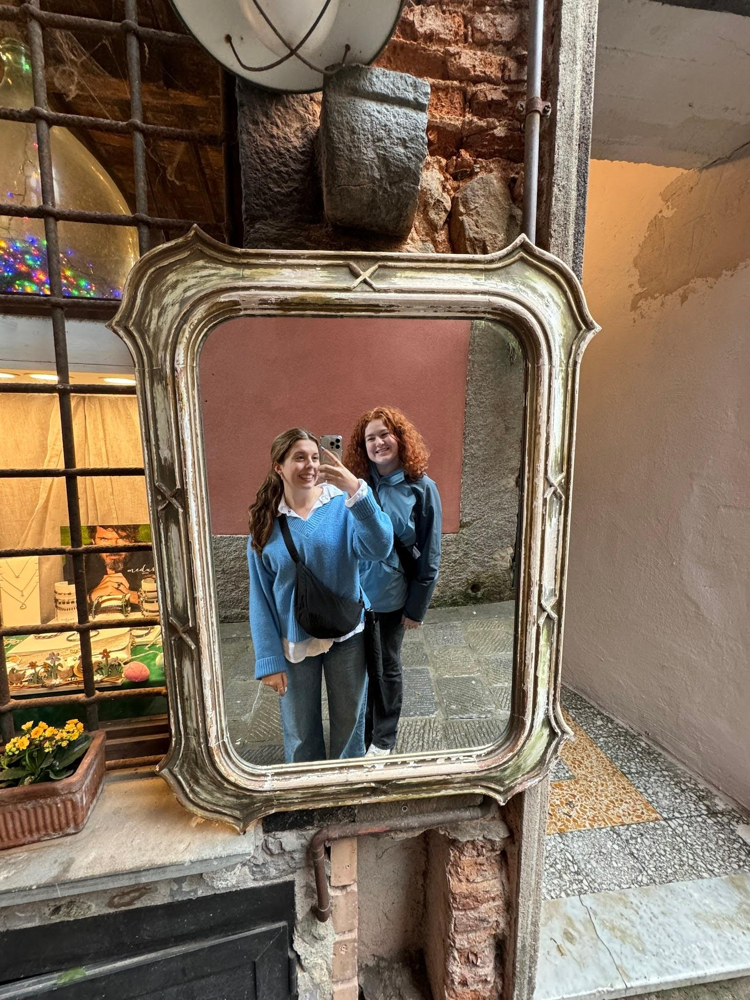 | Italy | cinque | 3/28/2024 12:17:26 | Afternoon | yes | core_200 | Urban | Sharing the experience | People | None |
81 | cinque_image10.JPG | Takeaway boxes of pasta with tomato sauce next to bottles of lemonade on a café table. |  | Italy | cinque | 3/28/2024 13:01:41 | Afternoon | yes | extra_100 | Indoor | Tasting the location | Food & Drink | None |
82 | cinque_image11.JPG | Tourists with backpacks walk up a narrow street of colorful buildings on an overcast day. | 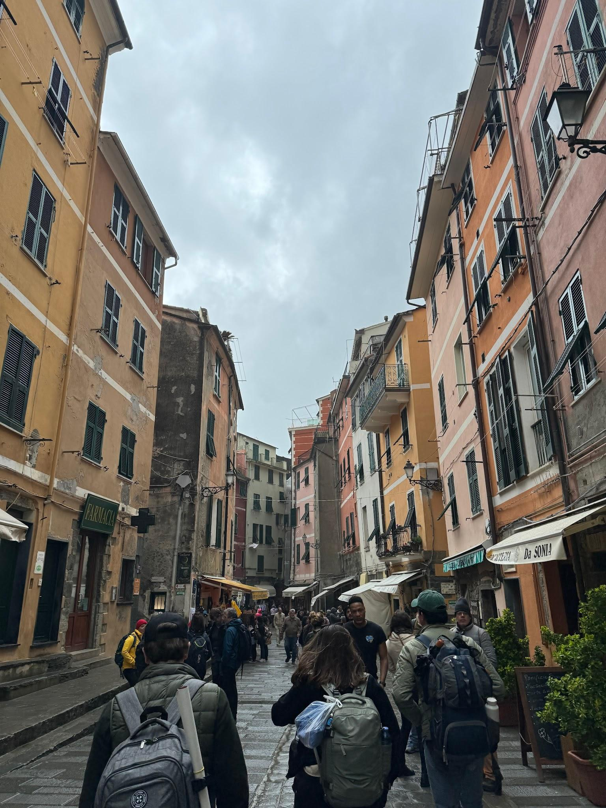 | Italy | cinque | 3/28/2024 13:28:56 | Afternoon | no | | Urban | Documenting the location | Built | None |
83 | cinque_image12.JPG | Vernazza's colorful harbor buildings and church tower under heavy gray clouds. | Italy | cinque | 3/28/2024 13:36:22 | Afternoon | no | | Urban | Documenting the location | Built | None | |
84 | cinque_image13.JPG | Two friends take a smiling selfie in front of Vernazza's pastel harbor houses. | Italy | cinque | 3/28/2024 13:37:52 | Afternoon | no | | Coastal | Sharing the experience | People | None | |
85 | cinque_image14.JPG | Stormy view over Vernazza's harbor, church, and castle tower with rough waves. |  | Italy | cinque | 3/28/2024 13:47:03 | Afternoon | yes | core_200 | Coastal | Documenting the location | Nature | Hint |
86 | cinque_image15.JPG | Hikers climb a stone staircase with metal railings up a terraced hillside. |  | Italy | cinque | 3/28/2024 14:41:53 | Afternoon | yes | core_200 | Nature | Documenting the location | Nature | None |
87 | cinque_image16.JPG | A narrow lane between tall pink and yellow buildings with a 'Bar Nunzio' sign. |  | Italy | cinque | 3/28/2024 15:03:15 | Afternoon | yes | core_200 | Urban | Documenting the location | Built | None |
88 | cinque_image17.JPG | Looking down a busy street of colorful buildings toward the sea under a hazy sun. |  | Italy | cinque | 3/28/2024 16:13:22 | Afternoon | yes | core_200 | Urban | Documenting the location | Built | None |
89 | cinque_image18.JPG | A hand holds a chocolate gelato cone in front of the arched entrance of Gelateria Alberto. | Italy | cinque | 3/28/2024 15:07:58 | Afternoon | yes | core_200 | Urban | Tasting the location | Food & Drink | Hint | |
90 | cinque_image19.JPG | Waves crash over dark rocks below a cliffside lookout under a rippled gray sky. | Italy | cinque | 3/28/2024 16:16:18 | Afternoon | no | | Coastal | Documenting the location | Nature | None | |
91 | cinque_image20.JPG | A woman in a blue sweater smiles at a railing with Manarola's colorful cliffside houses behind her. | Italy | cinque | 3/28/2024 16:25:16 | Afternoon | yes | extra_100 | Coastal | Putting myself in the frame | People | Obvious | |
92 | dublin_image1.JPG | Two friends pose outside the red, light-covered Temple Bar pub in Dublin. |  | Ireland | dublin | 2/17/2024 22:15:37 | Night | yes | core_200 | Urban | Sharing the experience | People | Obvious |
93 | dublin_image2.JPG | Three friends pose with the bronze Molly Malone statue and her cart. | Ireland | dublin | 2/17/2024 12:43:10 | Afternoon | yes | core_200 | Urban | Sharing the experience | People | Hint | |
94 | dublin_image3.JPG | Looking up at a Gothic stone arch framing colorful stained glass windows inside a cathedral. | Ireland | dublin | 2/17/2024 11:23:46 | Morning | yes | extra_100 | Indoor | Documenting the location | Built | None | |
95 | dublin_image4.JPG | An Irish flag flies over a red-brick Georgian building behind black iron railings. | Ireland | dublin | 2/17/2024 12:03:53 | Afternoon | no | | Urban | Documenting the location | Objects & Text | Hint | |
96 | dublin_image5.JPG | A pint of Guinness on a polished wooden pub table. | Ireland | dublin | 2/17/2024 20:16:45 | Evening | yes | core_200 | Indoor | Tasting the location | Food & Drink | Hint | |
97 | dublin_image6.JPG | A woman with a black umbrella twirls in the cobbled courtyard of Dublin Castle. |  | Ireland | dublin | 2/17/2024 12:06:51 | Afternoon | yes | core_200 | Urban | Putting myself in the frame | People | None |
98 | dublin_image7.JPG | A grassy garden lawn with a curving path toward colorful buildings under a gray sky. | Ireland | dublin | 2/17/2024 12:18:38 | Afternoon | yes | core_200 | Nature | Documenting the location | Nature | None | |
99 | dublin_image8.JPG | A whiskey tasting flight of four glasses on a lit bar labeled with flavor notes at Jameson. | Ireland | dublin | 2/18/2024 12:34:51 | Afternoon | no | | Indoor | Tasting the location | Food & Drink | None | |
100 | dublin_image9.JPG | A smiling woman in a fleece jacket stands in front of a colorful tiled wall of hearts and notes. |  | Ireland | dublin | 2/17/2024 14:14:16 | Afternoon | yes | extra_100 | Urban | Putting myself in the frame | People | None |
101 | dublin_image10.JPG | The Temple Bar pub at night, its facade covered in twinkling lights and hanging plants. |  | Ireland | dublin | 2/17/2024 1:45:30 | Night | yes | extra_100 | Urban | Documenting the location | Built | Obvious |
102 | dublin_image11.JPG | Colorful painted tiles spelling 'Love Lane' on a wall covered in hearts and handwritten notes. | Ireland | dublin | 2/17/2024 14:15:02 | Afternoon | yes | core_200 | Urban | Documenting the location | Objects & Text | None | |
103 | dublin_image12.JPG | A colorful Fauvist landscape painting in an ornate gold frame hanging in a gallery. | Ireland | dublin | 2/17/2024 15:44:10 | Afternoon | no | | Indoor | Documenting the location | Objects & Text | None | |
104 | dublin_image13.JPG | A smiling woman holding a black umbrella stands in the cobbled courtyard of Dublin Castle. |  | Ireland | dublin | 2/17/2024 12:06:50 | Afternoon | yes | core_200 | Urban | Putting myself in the frame | People | None |
105 | dublin_image14.JPG | A bowl of Irish beef stew with mashed potato, a pint of Guinness, and a burger with fries. |  | Ireland | dublin | 2/17/2024 20:23:19 | Evening | yes | core_200 | Indoor | Tasting the location | Food & Drink | Hint |
106 | dublin_image15.JPG | The arched entrance of the Jameson Distillery on Bow Street. |  | Ireland | dublin | 2/18/2024 12:03:44 | Afternoon | yes | extra_100 | Urban | Documenting the location | Objects & Text | Hint |
107 | dublin_image16.JPG | A woman stands beside a large Guinness St. James's Gate sign with the gold harp logo. |  | Ireland | dublin | 2/18/2024 13:34:23 | Afternoon | yes | extra_100 | Urban | Putting myself in the frame | Objects & Text | Obvious |
108 | dublin_image17.JPG | A red neon '232°C' sign about roasting barley inside the Guinness Storehouse exhibit. | Ireland | dublin | 2/18/2024 13:48:40 | Afternoon | yes | core_200 | Indoor | Documenting the location | Objects & Text | None | |
109 | edinburgh_image1.JPG | Edinburgh Castle on its rocky crag seen above green trees under a gray sky. | UK | edinburgh | 6/11/2024 10:18:17 | Morning | yes | core_200 | Nature | Documenting the location | Built | Obvious | |
110 | edinburgh_image2.JPG | View from Edinburgh Castle's stone ramparts over the city and gardens toward the sea. | UK | edinburgh | 6/11/2024 10:41:18 | Morning | no | | Coastal | Documenting the location | Nature | Hint | |
111 | edinburgh_image3.JPG | A smiling family selfie of three on the castle ramparts with Edinburgh's skyline behind. | UK | edinburgh | 6/11/2024 10:48:23 | Morning | no | | Nature | Sharing the experience | People | None | |
112 | edinburgh_image4.JPG | Crowds in Crown Square at Edinburgh Castle beneath a clock tower and stone buildings. | UK | edinburgh | 6/11/2024 12:01:41 | Afternoon | yes | core_200 | Urban | Documenting the location | Built | None | |
113 | edinburgh_image5.JPG | Visitors pass through a stone gatehouse between high castle walls at Edinburgh Castle. | UK | edinburgh | 6/11/2024 12:14:47 | Afternoon | yes | core_200 | Urban | Documenting the location | Built | Hint | |
114 | edinburgh_image6.JPG | A hand holds open a small book on the Crawford clan's motto, crest, and origins. |  | UK | edinburgh | 6/11/2024 12:21:34 | Afternoon | yes | core_200 | Indoor | Documenting the location | Objects & Text | Hint |
115 | edinburgh_image7.JPG | A 'Royal Mile' street sign on a sandstone building beside a Witchery Tour plaque. |  | UK | edinburgh | 6/11/2024 12:36:49 | Afternoon | yes | core_200 | Urban | Documenting the location | Objects & Text | Hint |
116 | edinburgh_image8.JPG | A pub meal of gammon steak and haggis with neeps on a wooden table. | UK | edinburgh | 6/11/2024 13:32:30 | Afternoon | no | | Indoor | Tasting the location | Food & Drink | None | |
117 | edinburgh_image9.JPG | The vaulted Gothic nave of St Giles' Cathedral hung with colorful heraldic banners. | UK | edinburgh | 6/11/2024 14:22:09 | Afternoon | yes | extra_100 | Indoor | Documenting the location | Built | Hint | |
118 | edinburgh_image10.JPG | Victoria Street's curving row of brightly painted shopfronts under strings of bunting. |  | UK | edinburgh | 6/11/2024 14:34:48 | Afternoon | yes | extra_100 | Urban | Documenting the location | Built | Obvious |
119 | edinburgh_image11.JPG | Pedestrians walk down cobbled Victoria Street past colorful shops and bunting. | UK | edinburgh | 6/11/2024 15:05:25 | Afternoon | no | | Urban | Documenting the location | Built | Hint | |
120 | edinburgh_image12.JPG | Tall old stone tenements tower over a busy cobbled street in Edinburgh's Old Town. |  | UK | edinburgh | 6/11/2024 15:06:32 | Afternoon | yes | core_200 | Urban | Documenting the location | Built | Hint |
121 | edinburgh_image13.JPG | Looking up at Edinburgh Castle's walls atop its volcanic rock above green trees. | UK | edinburgh | 6/11/2024 15:16:10 | Afternoon | no | | Urban | Documenting the location | Built | None | |
122 | edinburgh_image14.JPG | A sushi dinner with nigiri, maki, edamame, and sake on a dark restaurant table. |  | UK | edinburgh | 6/11/2024 19:58:34 | Evening | yes | extra_100 | Indoor | Tasting the location | Food & Drink | None |
123 | edinburgh_image15.JPG | View from Arthur's Seat over green hills, the city, and the Firth of Forth. |  | UK | edinburgh | 6/12/2024 13:37:30 | Afternoon | yes | core_200 | Coastal | Documenting the location | Nature | Hint |
124 | edinburgh_image16.JPG | A smiling family selfie of three atop Arthur's Seat with Edinburgh and the sea behind. | UK | edinburgh | 6/12/2024 13:39:12 | Afternoon | no | | Coastal | Sharing the experience | People | None | |
125 | edinburgh_image17.JPG | A loch and green parkland seen from a hilltop under a soft cloudy sky. |  | UK | edinburgh | 6/12/2024 14:02:07 | Afternoon | yes | extra_100 | Nature | Documenting the location | Nature | None |
126 | edinburgh_image18.JPG | The Water of Leith flowing past the old stone buildings of Dean Village. |  | UK | edinburgh | 6/12/2024 18:44:37 | Evening | yes | core_200 | Urban | Documenting the location | Built | Hint |
127 | edinburgh_image19.JPG | Looking up through a leafy tree at the stone arches of a tall viaduct bridge. |  | UK | edinburgh | 6/12/2024 18:55:53 | Evening | yes | extra_100 | Nature | Documenting the location | Built | None |
128 | edinburgh_image20.JPG | A restaurant table with an open menu, red wine glasses, and a carafe of water. | UK | edinburgh | 6/12/2024 19:31:58 | Evening | yes | core_200 | Indoor | Tasting the location | Food & Drink | None | |
129 | edinburgh_image21.JPG | Plates of penne all'arrabbiata and spaghetti with red wine on a wooden table. | UK | edinburgh | 6/12/2024 20:04:41 | Evening | no | | Indoor | Tasting the location | Food & Drink | None | |
130 | edinburgh_image22.JPG | A slice of tiramisu dusted with cocoa and drizzled with sauce, garnished with a strawberry. | UK | edinburgh | 6/12/2024 20:39:12 | Evening | no | | Indoor | Tasting the location | Food & Drink | None | |
131 | florence_image1.JPG | A red chair on a daisy-covered lawn with Tuscan hills and a villa in the distance. | Italy | florence | 3/29/2024 10:50:08 | Morning | no | | Nature | Documenting the location | Objects & Text | Hint | |
132 | florence_image2.JPG | A red bistro table and chairs on the grass outside a brick garden cottage. | Italy | florence | 3/29/2024 12:59:48 | Afternoon | no | | Urban | Documenting the location | Objects & Text | None | |
133 | florence_image3.JPG | A formal garden with a fountain and statue reflected in a pond under a hazy sky. | Italy | florence | 3/30/2024 10:23:02 | Morning | no | | Nature | Documenting the location | Nature | Hint | |
134 | florence_image4.JPG | A long gravel avenue lined with tall cypress trees and clipped hedges in the Boboli Gardens. | Italy | florence | 3/30/2024 10:25:04 | Morning | no | | Nature | Documenting the location | Built | None | |
135 | florence_image5.JPG | View over Florence's rooftops to the Duomo and Palazzo Vecchio tower on a hazy day. | Italy | florence | 3/30/2024 10:57:59 | Morning | no | | Urban | Documenting the location | Nature | Hint | |
136 | florence_image6.JPG | A marble statue atop a fountain in a green garden with trees and bluebells. | Italy | florence | 3/30/2024 11:01:53 | Morning | yes | extra_100 | Nature | Documenting the location | Nature | None | |
137 | florence_image7.JPG | A pergola-covered walkway above Florence with a blooming Judas tree and cypresses beyond. |  | Italy | florence | 3/30/2024 11:08:21 | Morning | yes | core_200 | Nature | Documenting the location | Nature | None |
138 | florence_image8.JPG | A woman with curly hair walks down a narrow Florentine street past a small yellow car. | Italy | florence | 3/30/2024 11:13:30 | Morning | yes | core_200 | Urban | Documenting the location | Built | None | |
139 | florence_image9.JPG | A hand holds a chocolate and hazelnut gelato cone outside a gelateria with a flavor board. | Italy | florence | 3/30/2024 12:06:31 | Afternoon | yes | extra_100 | Urban | Tasting the location | Food & Drink | Hint | |
140 | florence_image10.JPG | A hand holds two cannoli, pistachio and chocolate chip, in front of a pastry shop window. | Italy | florence | 3/30/2024 12:24:45 | Afternoon | yes | core_200 | Urban | Tasting the location | Food & Drink | Hint | |
141 | florence_image11.JPG | A long gallery of illuminated shelves displaying colorful leather handbags. | Italy | florence | 3/30/2024 13:21:29 | Afternoon | no | | Indoor | Documenting the location | Objects & Text | None | |
142 | florence_image12.JPG | The striped marble facade of Florence's Duomo with tourists in the piazza under a cloudy sky. |  | Italy | florence | 3/30/2024 14:01:26 | Afternoon | yes | core_200 | Urban | Documenting the location | Built | Obvious |
143 | florence_image13.JPG | Looking up into Brunelleschi's dome at the Last Judgment frescoes of the Florence Duomo. |  | Italy | florence | 3/30/2024 14:42:21 | Afternoon | yes | extra_100 | Indoor | Documenting the location | Built | Hint |
144 | florence_image14.JPG | Two hands raise an Aperol spritz and a mint spritz in a stone-walled Florentine street. |  | Italy | florence | 3/30/2024 15:29:11 | Afternoon | yes | core_200 | Urban | Tasting the location | Food & Drink | Hint |
145 | florence_image15.JPG | A woman in a white shirt holds an Aperol spritz while leaning against a stone doorway. | Italy | florence | 3/30/2024 15:31:20 | Afternoon | no | | Urban | Putting myself in the frame | People | None | |
146 | florence_image16.JPG | A woman smiles holding a pastry shop bag on a narrow sidewalk in Florence. |  | Italy | florence | 3/30/2024 16:10:51 | Afternoon | yes | extra_100 | Urban | Putting myself in the frame | People | None |
147 | florence_image18.JPG | The flower-garlanded arched entrance of the Officina Profumo-Farmaceutica di Santa Maria Novella. |  | Italy | florence | 3/30/2024 17:36:57 | Evening | yes | core_200 | Urban | Documenting the location | Built | None |
148 | florence_image19.JPG | A steak with roasted potatoes in olive oil beside red wine glasses on a white tablecloth. | Italy | florence | 3/30/2024 18:50:40 | Evening | no | | Indoor | Tasting the location | Food & Drink | None | |
149 | florence_image20.JPG | Two friends take a playful tilted selfie on a Florence street at dusk. | Italy | florence | 3/30/2024 19:44:54 | Evening | no | | Urban | Sharing the experience | People | None | |
150 | florence_image21.JPG | A pink neon 'Vivoli' sign glowing on a dark wall at night. | Italy | florence | 3/30/2024 19:54:22 | Evening | yes | core_200 | Urban | Documenting the location | Objects & Text | None | |
151 | florence_image22.JPG | Two cups of affogato-style dessert from Vivoli gelateria on a bright blue table. | Italy | florence | 3/30/2024 20:01:23 | Evening | yes | core_200 | Indoor | Tasting the location | Food & Drink | Obvious | |
152 | florence_image23.JPG | A woman takes a mirror selfie in an immersive art room projected with giant flowers. | Italy | florence | 3/31/2024 11:08:48 | Morning | yes | extra_100 | Indoor | Putting myself in the frame | People | None | |
153 | florence_image24.JPG | A hand holds up a Kindle e-reader in a garden with bare trees and Tuscan hills behind. | Italy | florence | 3/31/2024 15:58:01 | Afternoon | yes | core_200 | Nature | Everyday life | Objects & Text | None | |
154 | florence_image25.JPG | A covered market street lined with stalls of leather bags and jackets, with the Duomo dome at the end. | Italy | florence | 3/30/2024 16:35:03 | Afternoon | no | | Urban | Documenting the location | Built | Hint | |
155 | florence_image26.JPG | A wood-paneled shop with shelves of colorful leather handbags. | Italy | florence | 3/30/2024 16:08:08 | Afternoon | yes | core_200 | Indoor | Documenting the location | Objects & Text | None | |
156 | galway_image1.JPG | Two friends stand on a rocky shoreline beside the gray waters of Galway Bay. | Ireland | galway | 3/9/2024 14:06:17 | Afternoon | no | | Urban | Sharing the experience | People | Hint | |
157 | galway_image2.JPG | A busy pedestrian shopping street in Galway with colorful buildings and bunting. | Ireland | galway | 3/9/2024 13:01:12 | Afternoon | yes | core_200 | Urban | Documenting the location | Built | Hint | |
158 | galway_image3.JPG | The colorful houses of the Long Walk across the river from a green bank in Galway. | Ireland | galway | 3/9/2024 13:28:07 | Afternoon | no | | Coastal | Documenting the location | Built | Obvious | |
159 | galway_image4.JPG | Three friends pose on a grassy riverbank with the Long Walk's colorful houses behind them. | Ireland | galway | 3/9/2024 13:32:45 | Afternoon | no | | Coastal | Sharing the experience | People | Obvious | |
160 | galway_image5.JPG | Three friends in winter jackets pose on a windy seaside promenade. | Ireland | galway | 3/9/2024 14:08:06 | Afternoon | yes | extra_100 | Coastal | Sharing the experience | People | None | |
161 | galway_image6.JPG | Overhead view of a pub table with a burger, chips, and drinks on a tartan cloth. | Ireland | galway | 3/9/2024 15:03:36 | Afternoon | no | | Indoor | Tasting the location | Food & Drink | None | |
162 | galway_image7.JPG | A row of red and pastel terraced houses along a quiet street with parked cars. |  | Ireland | galway | 3/9/2024 15:46:01 | Afternoon | yes | core_200 | Urban | Documenting the location | Built | None |
163 | galway_image8.JPG | The Cliffs of Moher stretching into the misty Atlantic under an overcast sky. |  | Ireland | galway | 3/10/2024 12:32:16 | Afternoon | yes | core_200 | Coastal | Documenting the location | Nature | Obvious |
164 | galway_image9.JPG | A woman in a teal scarf poses with arms out on a grassy clifftop above the sea. | Ireland | galway | 3/10/2024 13:04:27 | Afternoon | no | | Coastal | Putting myself in the frame | People | Obvious | |
165 | galway_image10.JPG | A screenshot of a selfie of three tired friends bundled up on a bus, tagged Liscannor. | Ireland | galway | 3/10/2024 15:11:00 | Afternoon | no | | Indoor | Sharing the experience | People | None | |
166 | galway_image11.JPG | Three friends pose on the grassy edge of the Cliffs of Moher. |  | Ireland | galway | 3/10/2024 13:07:01 | Afternoon | yes | core_200 | Coastal | Sharing the experience | People | Obvious |
167 | galway_image12.JPG | A woman in a teal scarf stands on a clifftop with the Cliffs of Moher behind her. | Ireland | galway | 3/10/2024 13:14:25 | Afternoon | yes | core_200 | Coastal | Putting myself in the frame | People | Obvious | |
168 | galway_image13.JPG | Sheer dark cliffs drop into the ocean with waves breaking at their base. | Ireland | galway | 3/10/2024 13:16:42 | Afternoon | yes | core_200 | Coastal | Documenting the location | Nature | Obvious | |
169 | galway_image14.JPG | Two people stand on a grassy headland near a sea stack along the Cliffs of Moher. |  | Ireland | galway | 3/10/2024 18:36:58 | Evening | yes | extra_100 | Coastal | Sharing the experience | Nature | Hint |
170 | galway_image15.JPG | A smiling selfie of a woman in a bike helmet with two friends on a country road. | Ireland | galway | 3/11/2024 12:05:33 | Afternoon | yes | core_200 | Nature | Sharing the experience | People | None | |
171 | galway_image16.JPG | A cyclist reaches over a dry stone wall to pet a donkey on the Aran Islands. | Ireland | galway | 3/11/2024 12:11:14 | Afternoon | no | | Urban | Documenting the location | Objects & Text | Hint | |
172 | galway_image17.JPG | Black-and-white cows resting in a green field bordered by stone walls near the sea. | Ireland | galway | 3/11/2024 12:17:28 | Afternoon | yes | core_200 | Coastal | Documenting the location | Nature | None | |
173 | galway_image18.JPG | A person stands far off on a flat limestone shore by the sea under an overcast sky. | Ireland | galway | 3/11/2024 13:05:32 | Afternoon | no | | Coastal | Documenting the location | Nature | None | |
174 | galway_image19.JPG | A rugged landscape of limestone rocks and boulders leading to sea cliffs on the Aran Islands. | Ireland | galway | 3/11/2024 14:36:51 | Afternoon | yes | core_200 | Coastal | Documenting the location | Nature | None | |
175 | galway_image20.JPG | A lone person stands near the edge of a sheer limestone sea cliff on Inis Mór. | Ireland | galway | 3/11/2024 14:39:42 | Afternoon | yes | core_200 | Coastal | Sharing the experience | Nature | Hint | |
176 | galway_image21.JPG | Three smiling friends in winter hats take a selfie above sea cliffs and rough water. | Ireland | galway | 3/11/2024 14:42:13 | Afternoon | no | | Coastal | Sharing the experience | People | None | |
177 | galway_image22.JPG | A woman in a knit hat reclines on a rocky cliff edge, photographed from above with the sea below. | Ireland | galway | 3/11/2024 14:43:24 | Afternoon | no | | Coastal | Putting myself in the frame | People | None | |
178 | galway_image23.JPG | Three friends stand together on flat limestone rocks with the sea behind them. |  | Ireland | galway | 3/11/2024 14:46:10 | Afternoon | yes | extra_100 | Coastal | Sharing the experience | People | None |
179 | galway_image24.JPG | A group selfie of four smiling friends in hats and jackets on a seaside cliff. | Ireland | galway | 3/11/2024 14:46:40 | Afternoon | no | | Indoor | Sharing the experience | People | None | |
180 | galway_image25.JPG | A woman takes a mirror selfie in a narrow mirror inside a knitwear shop. |  | Ireland | galway | 3/11/2024 15:53:15 | Afternoon | yes | extra_100 | Indoor | Putting myself in the frame | People | None |
181 | galway_image26.PNG | A Snapchat screenshot of friends in hats and scarves riding on a ferry. |  | Ireland | galway | 3/11/2024 17:56:08 | Evening | yes | extra_100 | Indoor | Sharing the experience | People | None |
182 | genoa_image1.JPG | A narrow Genoa street at dusk with red neon 'benvegnui' and 'welcome' signs overhead. | Italy | genoa | 3/26/2024 18:51:16 | Evening | no | | Urban | Documenting the location | Built | None | |
183 | genoa_image2.JPG | White market stalls glowing with warm lights in a city square at twilight. | Italy | genoa | 3/27/2024 18:01:47 | Evening | yes | extra_100 | Urban | Everyday life | Objects & Text | None | |
184 | genoa_image3.JPG | A handwritten chalkboard listing wines and spritz prices on a bar wall. |  | Italy | genoa | 3/26/2024 19:14:49 | Evening | yes | core_200 | Indoor | Tasting the location | Objects & Text | None |
185 | genoa_image4.JPG | Two hands clink glasses of white and red wine over a wooden table. |  | Italy | genoa | 3/26/2024 19:18:03 | Evening | yes | core_200 | Indoor | Tasting the location | Food & Drink | None |
186 | genoa_image5.JPG | A hand holds a crusty sandwich filled with cured meat, wrapped in paper. | Italy | genoa | 3/26/2024 18:36:40 | Evening | no | | Indoor | Tasting the location | Food & Drink | None | |
187 | genoa_image6.JPG | A seaside village of colorful houses curving around a small beach with boats on a cloudy day. | Italy | genoa | 3/27/2024 10:49:28 | Morning | yes | core_200 | Coastal | Documenting the location | Built | None | |
188 | genoa_image7.JPG | A pale yellow building with painted pink panels and green shutters in Ligurian style. | Italy | genoa | 3/27/2024 11:03:22 | Morning | yes | extra_100 | Urban | Documenting the location | Built | None | |
189 | genoa_image8.JPG | A pizza topped with tomato sauce, pesto, and burrata in a takeaway box next to cans of Coca-Cola. | Italy | genoa | 3/27/2024 12:41:46 | Afternoon | no | | Indoor | Documenting the location | Food & Drink | None | |
190 | genoa_image9.JPG | Looking up at red marble columns and a gilded, frescoed ceiling inside an ornate Genoa church. | Italy | genoa | 3/27/2024 16:37:17 | Afternoon | yes | core_200 | Indoor | Documenting the location | Built | None | |
191 | genoa_image10.JPG | Two hands hold strips of golden Genoese focaccia over a stone-paved street. | Italy | genoa | 3/27/2024 16:50:23 | Afternoon | no | | Urban | Documenting the location | Built | Hint | |
192 | genoa_image11.JPG | A pesto shop counter with a pasta machine, mortars on shelves, and a Pestobene ingredients poster. |  | Italy | genoa | 3/27/2024 17:06:11 | Evening | yes | extra_100 | Indoor | Documenting the location | Objects & Text | None |
193 | genoa_image12.JPG | Two hands hold small pastries topped with bright green pesto. | Italy | genoa | 3/27/2024 17:09:29 | Evening | yes | core_200 | Urban | Tasting the location | Food & Drink | None | |
194 | genoa_image13.JPG | The black-and-white striped Gothic facade and bell tower of Genoa's San Lorenzo Cathedral. |  | Italy | genoa | 3/27/2024 17:26:49 | Evening | yes | extra_100 | Urban | Documenting the location | Built | None |
195 | genoa_image14.JPG | The large fountain in Piazza De Ferrari surrounded by grand buildings under gray clouds. | Italy | genoa | 3/27/2024 18:04:45 | Evening | yes | core_200 | Urban | Documenting the location | Built | None | |
196 | genoa_image15.JPG | Wide view of Piazza De Ferrari's fountains in front of the ornate Palazzo della Borsa. | Italy | genoa | 3/27/2024 18:05:48 | Evening | no | | Urban | Documenting the location | Built | Obvious | |
197 | genoa_image16.JPG | A long city street lined with tall buildings and café umbrellas leading to a domed church. | Italy | genoa | 3/27/2024 18:12:27 | Evening | yes | extra_100 | Urban | Documenting the location | Built | Hint | |
198 | genoa_image17.JPG | The weathered stone and brick facade of the Columbus House with Italian flags. |  | Italy | genoa | 3/27/2024 18:15:34 | Evening | yes | core_200 | Urban | Documenting the location | Built | None |
199 | genoa_image18.JPG | Gnocchi with pesto and a plate of fried pasta with wine on a red checked tablecloth. |  | Italy | genoa | 3/27/2024 20:22:19 | Evening | yes | core_200 | Indoor | Tasting the location | Food & Drink | None |
200 | genoa_image19.JPG | A glass cup of tiramisu dusted with cocoa on a red checked tablecloth. | Italy | genoa | 3/27/2024 21:03:05 | Night | yes | core_200 | Indoor | Tasting the location | Food & Drink | None | |
201 | lake_image1.JPG | A 'Welcome to Crawford, Please Drive Carefully' village sign on a grassy roadside. |  | UK | lake | 6/13/2024 11:43:59 | Morning | yes | core_200 | Nature | Documenting the location | Objects & Text | Hint |
202 | lake_image2.JPG | The ruined stone walls of a castle atop a grassy mound surrounded by trees. |  | UK | lake | 6/13/2024 11:46:49 | Morning | yes | core_200 | Nature | Documenting the location | Built | None |
203 | lake_image3.JPG | An iron 'Castle Crawford' sign over a stone wall with a red 'No parking' notice. |  | UK | lake | 6/13/2024 11:47:33 | Morning | yes | core_200 | Nature | Documenting the location | Objects & Text | Hint |
204 | lake_image4.JPG | A skillet of patatas bravas and a dish of black pudding with bread on a café table. | UK | lake | 6/13/2024 13:24:15 | Afternoon | yes | core_200 | Indoor | Tasting the location | Food & Drink | None | |
205 | lake_image5.JPG | Chocolate crêpes with raspberries and hazelnuts and a brownie with ice cream in speckled bowls. |  | UK | lake | 6/13/2024 14:08:19 | Afternoon | yes | extra_100 | Indoor | Tasting the location | Food & Drink | None |
206 | lake_image6.jpg | A cathedral's blue, gold-starred painted ceiling above a large stained glass window. | UK | lake | 6/13/2024 15:10:42 | Afternoon | no | | Indoor | Documenting the location | Built | None | |
207 | lake_image7.JPG | Two people in rain jackets walk down a wet country lane lined with trees. |  | UK | lake | 6/13/2024 18:44:16 | Evening | yes | core_200 | Nature | Sharing the experience | Nature | None |
208 | lake_image8.JPG | A green meadow with a small pond and trees under a bright blue sky with puffy clouds. |  | UK | lake | 6/14/2024 15:15:35 | Afternoon | yes | extra_100 | Nature | Documenting the location | Nature | None |
209 | lake_image9.JPG | Sheep graze on a green hillside behind a dry stone wall under big white clouds. | UK | lake | 6/14/2024 16:44:12 | Afternoon | no | | Urban | Documenting the location | Nature | None | |
210 | lake_image10.JPG | A sunny meadow with large oak trees and a wooden fence, framed by overhanging branches. | UK | lake | 6/14/2024 16:45:59 | Afternoon | yes | extra_100 | Nature | Documenting the location | Nature | None | |
211 | lake_image11.JPG | A smiling woman in a black sweater stands on a rocky viewpoint above Lake Windermere. |  | UK | lake | 6/14/2024 16:52:22 | Afternoon | yes | core_200 | Nature | Putting myself in the frame | People | None |
212 | lake_image12.JPG | View from a rocky hilltop over woodland and Lake Windermere under a bright cloud-filled sky. | UK | lake | 6/14/2024 16:50:14 | Afternoon | no | | Nature | Documenting the location | Nature | None | |
213 | lake_image13.JPG | A tilted selfie of three smiling people on a rocky hillside above the lake. |  | UK | lake | 6/14/2024 16:53:30 | Afternoon | yes | core_200 | Nature | Sharing the experience | People | None |
214 | lake_image14.JPG | Rolling green Lake District fells and fields seen from a rocky outcrop under puffy clouds. | UK | lake | 6/14/2024 16:52:47 | Afternoon | no | | Nature | Documenting the location | Nature | None | |
215 | lake_image15.JPG | A glimpse of a lake and distant hills through tall woodland trees. | UK | lake | 6/14/2024 17:15:01 | Evening | no | | Nature | Documenting the location | Built | None | |
216 | lake_image16.JPG | A sunny grassy hillside under blue sky and clouds, framed by leafy branches. | UK | lake | 6/14/2024 17:18:46 | Evening | no | | Nature | Documenting the location | Nature | None | |
217 | lake_image17.JPG | A smiling selfie of three people with green valleys and fells behind them. | UK | lake | 6/14/2024 16:53:00 | Afternoon | yes | core_200 | Nature | Sharing the experience | People | None | |
218 | lake_image18.JPG | The swinging sign of The Black Labrador pub above a flower bed. | UK | lake | 6/14/2024 19:46:08 | Evening | no | | Indoor | Documenting the location | Built | None | |
219 | lake_image19.JPG | Two curious black-and-white cows up close in a pasture at sunset. | UK | lake | 6/14/2024 21:39:21 | Night | yes | core_200 | Nature | Documenting the location | Nature | None | |
220 | lake_image20.JPG | A herd of black-and-white cows gathers at a metal farm gate under a pink sunset sky. |  | UK | lake | 6/14/2024 21:43:05 | Night | yes | extra_100 | Nature | Documenting the location | Nature | None |
221 | lake_image21.JPG | A pink-walled room in a historic house with an oil painting, large Imari vases, and a wooden chest. |  | UK | lake | 6/15/2024 12:25:58 | Afternoon | yes | core_200 | Indoor | Documenting the location | Objects & Text | None |
222 | lake_image22.JPG | A large classical tapestry hanging above bookshelves in a stately home's library. | UK | lake | 6/15/2024 12:34:46 | Afternoon | no | | Indoor | Documenting the location | Objects & Text | None | |
223 | lake_image23.JPG | A gravel drive leading to the crenellated stone tower of Sizergh Castle under gray skies. | UK | lake | 6/15/2024 13:27:26 | Afternoon | no | | Urban | Documenting the location | Built | Hint | |
224 | lake_image24.JPG | A rock garden full of ferns, purple and blue flowers, and a red Japanese maple. |  | UK | lake | 6/15/2024 14:55:54 | Afternoon | yes | extra_100 | Nature | Documenting the location | Nature | None |
225 | leeds_image1.JPG | The ornate sandstone entrance of Leeds City Markets with shoppers outside. | UK | leeds | 2/3/2024 16:04:33 | Afternoon | no | | Urban | Documenting the location | Built | Hint | |
226 | leeds_image2.JPG | A group of friends pose together in a dimly lit room at night. | UK | leeds | 5/12/2024 21:00:00 | Night | no | | Indoor | Sharing the experience | People | None | |
227 | leeds_image3.JPG | Two women in a green dress and black outfit walk down a city street at night. | UK | leeds | 2/3/2024 19:55:31 | Evening | no | | Urban | Documenting the location | Built | Hint | |
228 | leeds_image4.JPG | A laptop and a tablet with handwritten notes on a café counter during a study session. | UK | leeds | 1/31/2024 10:19:00 | Morning | no | | Urban | Tasting the location | Food & Drink | None | |
229 | leeds_image5.JPG | Two friends take a mirror selfie in a yellow-tiled bar bathroom. | UK | leeds | 2/22/2024 0:28:00 | Night | no | | Indoor | Sharing the experience | People | None | |
230 | leeds_image6.JPG | A hand holds a box of popcorn in an old-fashioned cinema with a red curtain. | UK | leeds | 2/22/2024 15:23:00 | Afternoon | no | | Indoor | Tasting the location | Food & Drink | None | |
231 | leeds_image7.JPG | A planter of pink, red, and yellow tulips in front of a modern building. | UK | leeds | 4/22/2024 17:58:46 | Evening | no | | Urban | Documenting the location | Built | None | |
232 | leeds_image8.JPG | A person leans over a green pool table to take a shot in a student common room. | UK | leeds | 4/24/2024 18:52:25 | Evening | no | | Indoor | Documenting the location | Nature | None | |
233 | leeds_image9.JPG | View from the back of a wood-paneled lecture theater with a tablet of notes in the foreground. | UK | leeds | 4/22/2024 17:14:53 | Evening | yes | core_200 | Indoor | Everyday life | Objects & Text | None | |
234 | leeds_image10.JPG | The Hyde Park Picture House logo projected on a cinema screen in the dark. | UK | leeds | 5/2/2024 20:49:20 | Evening | no | | Nature | Documenting the location | Objects & Text | None | |
235 | leeds_image11.JPG | A big group selfie of smiling friends in a living room. | UK | leeds | 5/8/2024 23:27:02 | Night | yes | core_200 | Indoor | Sharing the experience | People | None | |
236 | leeds_image12.JPG | A dim late-night selfie of two friends lying in bed making faces. | UK | leeds | 5/9/2024 0:25:00 | Night | yes | core_200 | Indoor | Sharing the experience | People | None | |
237 | leeds_image13.JPG | Pink and purple northern lights glowing in the night sky above trees. | UK | leeds | 5/10/2024 23:38:10 | Night | no | | Urban | Documenting the location | Built | None | |
238 | leeds_image14.jpg | A woman in sunglasses and a leopard skirt poses in a festival crowd in front of a large stage. |  | UK | leeds | 5/25/2024 13:18:17 | Afternoon | yes | extra_100 | Nature | Putting myself in the frame | People | None |
239 | leeds_image15.JPG | A smiling woman in a denim jacket walks along a residential street at dusk. | UK | leeds | 6/3/2024 22:11:22 | Night | no | | Urban | Putting myself in the frame | People | None | |
240 | leeds_image16.JPG | Friends sit around a coffee table making beaded bracelets in a lounge. |  | UK | leeds | 6/6/2024 21:34:14 | Night | yes | extra_100 | Indoor | Sharing the experience | People | None |
241 | leeds_image17.JPG | Rows of tulips and daffodils bloom along a park path near a church spire. |  | UK | leeds | 5/4/2024 13:45:30 | Afternoon | yes | core_200 | Nature | Documenting the location | Nature | None |
242 | leeds_image18.JPG | A selfie of five friends around a pub table with drinks and food. | UK | leeds | 1/30/2024 21:09:43 | Night | no | | Indoor | Tasting the location | Food & Drink | None | |
243 | leeds_image19.JPG | A row of red-brick Victorian terraced houses with bay windows and stone steps. |  | UK | leeds | 2/1/2024 10:02:14 | Morning | yes | core_200 | Urban | Documenting the location | Built | Hint |
244 | leeds_image20.JPG | A pedestrian walkway on a university campus lined with red-brick buildings, bikes, and bunting. | UK | leeds | 2/1/2024 13:38:59 | Afternoon | yes | core_200 | Urban | Everyday life | Built | None | |
245 | leeds_image21.JPG | Two friends smile with cocktails in a dim bar with hanging macramé planters. |  | UK | leeds | 2/2/2024 21:26:36 | Night | yes | extra_100 | Indoor | Sharing the experience | People | None |
246 | leeds_image22.JPG | A woman in sunglasses strikes a playful pose at a table in a decorated bar. | UK | leeds | 2/2/2024 22:27:12 | Night | yes | extra_100 | Indoor | Sharing the experience | People | None | |
247 | leeds_image23.JPG | Wide view inside the domed glass roof and circular galleries of the Leeds Corn Exchange. | UK | leeds | 2/3/2024 15:51:05 | Afternoon | no | | Indoor | Documenting the location | Built | None | |
248 | leeds_image24.JPG | The red, light-strung outdoor terrace of the Hyde Park Book Club bar at night with picnic tables. | UK | leeds | 6/16/2024 22:52:57 | Night | no | | Indoor | Documenting the location | Built | Obvious | |
249 | leeds_image25.JPG | A brightly lit 'Crispy Fish & Chips' takeaway shop on a dark street at night. | UK | leeds | 6/16/2024 22:54:45 | Night | no | | Urban | Documenting the location | Objects & Text | Hint | |
250 | leeds_image26.JPG | A simple student bedroom with a double bed, desk, and bay window. | UK | leeds | 6/18/2024 5:50:27 | Morning | no | | Indoor | Documenting the location | Food & Drink | None | |
251 | leeds_image27.JPG | The arched doorway and stone steps of a red-brick Victorian student residence among trees. | UK | leeds | 6/18/2024 6:21:04 | Morning | no | | Urban | Documenting the location | Built | Hint | |
252 | leeds_image28.JPG | A laptop playing a show beside a coffee cup on a small table by a window, legs crossed in front. | UK | leeds | 2/8/2024 11:22:57 | Morning | no | | Urban | Tasting the location | Food & Drink | None | |
253 | leeds_image29.JPG | A large group of friends pose together on and around a bed at a night-time gathering. | UK | leeds | 5/12/2024 14:23:44 | Afternoon | no | | Indoor | Sharing the experience | People | None | |
254 | leeds_image30.JPG | A sideways selfie of three friends holding bags while walking down a street at night. | UK | leeds | 2/14/2024 22:43:20 | Night | no | | Urban | Sharing the experience | People | None | |
255 | leeds_image31.JPG | A person naps on a gray velvet sofa in a bright, white-paneled lounge. | UK | leeds | 2/21/2024 21:46:41 | Night | no | | Indoor | Documenting the location | Objects & Text | None | |
256 | leeds_image32.JPG | A cheerful selfie of four friends in a bright modern building. | UK | leeds | 3/2/2024 0:25:00 | Night | yes | core_200 | Indoor | Sharing the experience | People | None | |
257 | leeds_image33.JPG | Three friends take a mirror selfie in a modern restroom. | UK | leeds | 3/2/2024 2:08:59 | Night | no | | Indoor | Sharing the experience | People | None | |
258 | leeds_image34.JPG | Two friends smile in a selfie under green club lights. | UK | leeds | 3/2/2024 2:23:31 | Night | no | | Indoor | Sharing the experience | People | None | |
259 | leeds_image35.JPG | A tree-lined residential road with red-brick houses on a partly cloudy day. | UK | leeds | 3/4/2024 16:49:44 | Afternoon | no | | Urban | Documenting the location | Built | None | |
260 | leeds_image36.JPG | Two people pose in front of a large Dune: Part Two movie poster at a cinema. |  | UK | leeds | 3/8/2024 0:14:00 | Night | yes | core_200 | Indoor | Sharing the experience | People | None |
261 | leeds_image37.jpg | A woman in sunglasses dances in her seat at a bar, motion-blurred. | UK | leeds | 3/8/2024 14:13:41 | Afternoon | no | | Indoor | Putting myself in the frame | People | None | |
262 | leeds_image38.JPG | A hand shows off colorful pastel nail art against a brick-paved sidewalk. | UK | leeds | 3/14/2024 14:10:50 | Afternoon | no | | Urban | Documenting the location | Objects & Text | None | |
263 | leeds_image39.JPG | A live jazz band with saxophone, keyboard, and drums plays in front of a red curtain. |  | UK | leeds | 3/14/2024 21:32:34 | Night | yes | core_200 | Indoor | Documenting the location | People | None |
264 | leeds_image40.JPG | Three friends with drinks pose in the aisles of a vintage clothing store. |  | UK | leeds | 3/15/2024 15:42:30 | Afternoon | yes | core_200 | Indoor | Sharing the experience | People | None |
265 | leeds_image41.JPG | A chalkboard map of 'The Otley Run' pub crawl with a neon cowboy hat on a brick wall. | UK | leeds | 3/16/2024 13:28:39 | Afternoon | no | | Indoor | Documenting the location | Objects & Text | None | |
266 | leeds_image42.jpg | A smiling woman stands in a campus plaza in front of two black zigzag sculptures. | UK | leeds | 6/1/2024 13:57:53 | Afternoon | no | | Urban | Putting myself in the frame | People | None | |
267 | leeds_image43.jpg | Four friends take a mirror selfie in a yellow-tiled bathroom with steel sinks. | UK | leeds | 6/1/2024 21:42:49 | Night | no | | Urban | Sharing the experience | People | None | |
268 | leeds_image44.JPG | A woman in a shamrock top smiles amid a crowded party under colorful lights. | UK | leeds | 3/16/2024 21:22:51 | Night | no | | Indoor | Putting myself in the frame | People | None | |
269 | leeds_image45.JPG | A woman in sunglasses and a shamrock top dances in a crowded venue under colored lights. | UK | leeds | 3/16/2024 21:23:40 | Night | yes | extra_100 | Indoor | Sharing the experience | People | None | |
270 | leeds_image46.JPG | A woman in a shamrock top flashes a peace sign in a dark, crowded club. | UK | leeds | 3/16/2024 22:20:19 | Night | no | | Indoor | Putting myself in the frame | People | None | |
271 | leeds_image47.JPG | A person in a black hat dances under bright purple club lights. | UK | leeds | 1/28/2024 1:24:05 | Night | no | | Indoor | Documenting the location | People | None | |
272 | lisbon_image1.JPG | Four smiling friends take a selfie in front of a wall of colorful artificial flowers. | Portugal | lisbon | 5/17/2024 16:07:51 | Afternoon | yes | core_200 | Urban | Sharing the experience | People | None | |
273 | lisbon_image2.JPG | A woman in a denim jacket walks past market stalls on a tree-lined Lisbon boulevard. |  | Portugal | lisbon | 5/17/2024 10:22:03 | Morning | yes | core_200 | Urban | Sharing the experience | Nature | None |
274 | lisbon_image3.JPG | A fountain and column in Rossio Square beside market huts on wavy black-and-white cobbles. | Portugal | lisbon | 5/17/2024 10:43:22 | Morning | no | | Urban | Documenting the location | Objects & Text | None | |
275 | lisbon_image4.jpg | Purple jacaranda trees bloom over a wavy-patterned plaza with a pink tuk-tuk. | Portugal | lisbon | 5/17/2024 10:46:42 | Morning | no | | Nature | Documenting the location | Nature | None | |
276 | lisbon_image5.JPG | An outdoor café table full of pastéis de nata, pastries, and coffees. |  | Portugal | lisbon | 5/17/2024 11:09:46 | Morning | yes | core_200 | Urban | Tasting the location | Food & Drink | Hint |
277 | lisbon_image6.JPG | Rua Augusta's patterned mosaic pavement and café tables leading to the triumphal arch. | Portugal | lisbon | 5/17/2024 11:45:06 | Morning | yes | core_200 | Urban | Documenting the location | Built | Hint | |
278 | lisbon_image7.JPG | A group selfie of friends on Lisbon's Pink Street under hanging rainbow umbrellas. | Portugal | lisbon | 5/17/2024 12:34:15 | Afternoon | no | | Urban | Sharing the experience | People | None | |
279 | lisbon_image8.jpg | Looking up at rainbow umbrellas suspended over a narrow street. | Portugal | lisbon | 5/17/2024 12:40:14 | Afternoon | yes | core_200 | Urban | Documenting the location | Objects & Text | None | |
280 | lisbon_image9.JPG | View over Lisbon's terracotta rooftops to São Jorge Castle on the hill. | Portugal | lisbon | 5/17/2024 13:08:53 | Afternoon | no | | Urban | Documenting the location | Nature | Hint | |
281 | lisbon_image10.JPG | A smiling woman in a cream top stands at a railing above Lisbon's red rooftops under a cloudy sky. |  | Portugal | lisbon | 5/17/2024 14:30:11 | Afternoon | yes | extra_100 | Urban | Putting myself in the frame | People | Hint |
282 | lisbon_image11.JPG | A woman in a cream top tilts her head at a rooftop viewpoint over Lisbon. |  | Portugal | lisbon | 5/17/2024 14:34:46 | Afternoon | yes | extra_100 | Urban | Putting myself in the frame | People | Hint |
283 | lisbon_image12.JPG | A woman smiles at a hillside viewpoint under a blooming jacaranda tree with the city below. | Portugal | lisbon | 5/17/2024 14:43:19 | Afternoon | yes | core_200 | Urban | Putting myself in the frame | People | None | |
284 | lisbon_image13.jpg | A woman waves beside a railing under a jacaranda tree at a Lisbon miradouro. |  | Portugal | lisbon | 5/17/2024 14:49:06 | Afternoon | yes | extra_100 | Urban | Putting myself in the frame | People | None |
285 | lisbon_image14.JPG | A yellow vintage Lisbon tram climbs a cobbled street beneath overhead wires. | Portugal | lisbon | 5/17/2024 16:23:46 | Afternoon | no | | Urban | Documenting the location | Built | None | |
286 | lisbon_image15.jpg | A wall of blue-and-white azulejo tiles in front of rooftops and the river. |  | Portugal | lisbon | 5/17/2024 16:27:01 | Afternoon | yes | core_200 | Coastal | Documenting the location | Objects & Text | Hint |
287 | lisbon_image16.JPG | View over Alfama's red rooftops and church domes to the Tagus River, framed by leaves. | Portugal | lisbon | 5/17/2024 16:32:29 | Afternoon | no | | Urban | Documenting the location | Built | Hint | |
288 | lisbon_image17.JPG | A colorful tiled mural along a street wall with jacaranda trees blooming above. |  | Portugal | lisbon | 5/17/2024 17:00:57 | Evening | yes | core_200 | Urban | Documenting the location | Built | None |
289 | lisbon_image18.JPG | Friends walk up a narrow street lined with pastel pink and yellow buildings. |  | Portugal | lisbon | 5/17/2024 17:35:22 | Evening | yes | extra_100 | Urban | Sharing the experience | Built | None |
290 | lisbon_image19.JPG | A shop wall of wooden shelves displaying hundreds of decorative ceramic tiles. | Portugal | lisbon | 5/17/2024 18:18:01 | Evening | no | | Indoor | Documenting the location | Objects & Text | None | |
291 | lisbon_image20.JPG | Fresh spring rolls with a dipping sauce on a ceramic platter beside a glass of beer. | Portugal | lisbon | 5/17/2024 20:29:12 | Evening | no | | Indoor | Tasting the location | Food & Drink | None | |
292 | lisbon_image21.JPG | Bowls of noodles, shrimp, and a dipping broth with fresh vegetables on a marble table. | Portugal | lisbon | 5/17/2024 20:48:26 | Evening | yes | core_200 | Indoor | Tasting the location | Food & Drink | None | |
293 | lisbon_image22.jpg | A woman in a cream top sits on the riverbank with the 25 de Abril Bridge in the distance. |  | Portugal | lisbon | 5/17/2024 12:11:23 | Afternoon | yes | extra_100 | Coastal | Putting myself in the frame | People | Hint |
294 | lisbon_image23.JPG | A woman stands in front of a colorful street-art mural of cartoon faces. | Portugal | lisbon | 5/17/2024 12:54:52 | Afternoon | yes | core_200 | Urban | Putting myself in the frame | People | None | |
295 | liverpool_image1.JPG | The red wrought-iron Strawberry Field gates set in a stone wall under green trees. | UK | liverpool | 5/31/2024 11:49:42 | Morning | yes | core_200 | Nature | Documenting the location | Built | Hint | |
296 | liverpool_image2.JPG | Friends walk along a leafy suburban road on a partly cloudy day. |  | UK | liverpool | 5/31/2024 11:56:34 | Morning | yes | core_200 | Nature | Sharing the experience | Nature | None |
297 | liverpool_image3.JPG | A sandstone church tower with a clock rising above an old graveyard of headstones. |  | UK | liverpool | 5/31/2024 12:17:18 | Afternoon | yes | core_200 | Urban | Documenting the location | Built | None |
298 | liverpool_image4.JPG | A 'Penny Lane' street sign on the corner of a red-brick building with parked cars along the road. | UK | liverpool | 5/31/2024 14:35:47 | Afternoon | yes | core_200 | Urban | Documenting the location | Built | Hint | |
299 | liverpool_image5.JPG | A weathered, graffiti-covered 'Penny Lane' sign behind protective glass on a stone wall. | UK | liverpool | 5/31/2024 14:57:12 | Afternoon | yes | core_200 | Urban | Documenting the location | Objects & Text | Hint | |
300 | liverpool_image6.JPG | Museum display cases showing 'Love Me Do' vinyl records in a red Beatles exhibit. | UK | liverpool | 5/31/2024 16:16:23 | Afternoon | yes | core_200 | Indoor | Documenting the location | Objects & Text | Hint | |
301 | liverpool_image7.JPG | A replica Cavern Club stage with Beatles-branded drums, guitars, and a colorful band-name wall. | UK | liverpool | 5/31/2024 16:27:33 | Afternoon | yes | core_200 | Indoor | Documenting the location | Objects & Text | Hint | |
302 | liverpool_image8.JPG | Two Neapolitan margherita pizzas with drinks on a bright green table. |  | UK | liverpool | 5/31/2024 17:41:19 | Evening | yes | core_200 | Indoor | Tasting the location | Food & Drink | None |
303 | liverpool_image9.JPG | Giant colorful letters spelling 'LIVERPOOL' along a paved waterfront walkway. | UK | liverpool | 5/31/2024 19:20:26 | Evening | yes | core_200 | Urban | Documenting the location | Objects & Text | Obvious | |
304 | london_image1.JPG | Crowds browse food stalls under strings of flags at the Ropewalk market beneath railway arches. | UK | london | 2/10/2024 15:00:00 | Afternoon | yes | core_200 | Urban | Documenting the location | People | None | |
305 | london_image2.JPG | A woman walks past pastel houses on a street in Notting Hill, with a location sticker. | UK | london | 2/11/2024 13:18:00 | Afternoon | no | | Urban | Putting myself in the frame | People | None | |
306 | london_image3.JPG | A Korean meal of spicy kimchi stew with a bowl of rice. |  | UK | london | 2/10/2024 19:14:00 | Evening | yes | core_200 | Indoor | Tasting the location | Food & Drink | None |
307 | london_image4.JPG | A smiling woman holds up a gray plush bunny inside a toy shop. |  | UK | london | 2/11/2024 16:31:00 | Evening | yes | extra_100 | Indoor | Putting myself in the frame | People | None |
308 | london_image5.JPG | An Indian feast of curries, naan, and rice at the Hichki restaurant. | UK | london | 2/11/2024 20:43:00 | Evening | yes | extra_100 | Indoor | Tasting the location | Food & Drink | None | |
309 | london_image6.JPG | Korean dishes of tteokbokki and banchan side dishes at Hankki. | UK | london | 2/10/2024 19:16:00 | Evening | no | | Indoor | Documenting the location | Built | None | |
310 | london_image7.JPG | Three friends take a selfie inside a London Eye capsule with the city lit up at night. | UK | london | 2/11/2024 18:31:14 | Evening | yes | core_200 | Indoor | Sharing the experience | People | Hint | |
311 | london_image8.JPG | Two friends take a mirror selfie at Ballie Ballerson. | UK | london | 2/11/2024 23:36:13 | Night | no | | Urban | Sharing the experience | People | None | |
312 | london_image9.JPG | A woman shoots hoops at an arcade basketball game in a dim, blue-lit room. |  | UK | london | 2/11/2024 23:42:48 | Night | yes | extra_100 | Indoor | Putting myself in the frame | None/Other | None |
313 | london_image10.JPG | A woman sips a drink through a straw from a teapot under red lighting. | UK | london | 2/10/2024 0:51:46 | Night | no | | Indoor | Putting myself in the frame | People | None | |
314 | london_image11.JPG | A woman in a long coat stands outside the stone base of Tower Bridge. | UK | london | 2/10/2024 13:12:18 | Afternoon | no | | Urban | Putting myself in the frame | People | None | |
315 | london_image12.JPG | A woman in a long coat walks on the sidewalk with Big Ben behind her. | UK | london | 2/10/2024 14:13:37 | Afternoon | yes | core_200 | Urban | Putting myself in the frame | People | Obvious | |
316 | london_image13.JPG | A woman poses on the pavement with Big Ben and a red double-decker bus behind her. |  | UK | london | 2/10/2024 14:13:46 | Afternoon | yes | core_200 | Urban | Putting myself in the frame | People | Obvious |
317 | london_image14.JPG | Close-up of the ornate gold clock face and spire of Big Ben against a cloudy sky. | UK | london | 2/10/2024 14:17:32 | Afternoon | yes | extra_100 | Urban | Documenting the location | Built | Obvious | |
318 | london_image15.JPG | Korean barbecue with grilled pork on a hot stone, lettuce wraps, and dipping sauces. | UK | london | 2/10/2024 19:41:15 | Evening | no | | Urban | Tasting the location | Food & Drink | None | |
319 | london_image16.JPG | Brunch of avocado toast with eggs, a smoothie bowl, and French toast with berries and banana. | UK | london | 2/11/2024 10:36:21 | Morning | yes | core_200 | Indoor | Tasting the location | Food & Drink | None | |
320 | london_image17.JPG | Crowds walk down Portobello Road past pastel-painted houses under a blue sky. | UK | london | 2/11/2024 13:31:05 | Afternoon | yes | core_200 | Urban | Documenting the location | Built | Hint | |
321 | london_image18.JPG | A woman in a scarf and long coat stands in a navy blue doorway between white columns. | UK | london | 2/11/2024 14:25:16 | Afternoon | no | | Coastal | Putting myself in the frame | People | None | |
322 | london_image19.JPG | Two people walk across the famous Abbey Road zebra crossing. | UK | london | 2/11/2024 14:55:12 | Afternoon | no | | Urban | Documenting the location | Built | None | |
323 | london_image20.JPG | Night view over the Thames, Hungerford Bridge, and the lit-up London skyline from above. | UK | london | 2/11/2024 18:25:28 | Evening | no | | Coastal | Documenting the location | Built | Hint | |
324 | london_image21.JPG | A woman makes a surprised face in front of the glittering night view of London from high up. | UK | london | 2/11/2024 18:28:37 | Evening | yes | core_200 | Indoor | Putting myself in the frame | People | None | |
325 | london_image22.JPG | A hand holds a fuzzy strawberry plush toy over a wooden floor. | UK | london | 2/11/2024 21:26:27 | Night | no | | Indoor | Documenting the location | Objects & Text | None | |
326 | london_image23.JPG | A woman wades through a glowing blue and purple ball pit in a mirrored room. | UK | london | 2/11/2024 22:57:24 | Night | no | | Indoor | Putting myself in the frame | People | None | |
327 | london_image24.JPG | A woman's face peeks out from a sea of blue ball-pit balls. | UK | london | 2/11/2024 23:01:00 | Night | no | | Indoor | Documenting the location | Nature | None | |
328 | london_image25.JPG | People play in a giant ball pit lit in neon colors under a mirrored ceiling. | UK | london | 2/11/2024 23:21:27 | Night | no | | Indoor | Documenting the location | None/Other | None | |
329 | london_image26.JPG | A woman lies back in a pink-lit ball pit at an adult ball-pit bar. |  | UK | london | 2/11/2024 23:21:39 | Night | yes | core_200 | Indoor | Putting myself in the frame | None/Other | None |
330 | london_image27.JPG | A black 'Crawfords Delivery Services' van parked outside a Café de Nata on a London street. | UK | london | 2/10/2024 16:17:34 | Afternoon | yes | extra_100 | Urban | Documenting the location | Objects & Text | None | |
331 | london_image28.JPG | People with umbrellas walk past a grand stone museum facade under a golden sunset sky. | UK | london | 2/10/2024 17:00:10 | Evening | yes | core_200 | Urban | Sharing the experience | Built | None | |
332 | london_image29.JPG | Rows of red Chinese lanterns hang above a crowded street in Chinatown at night. | UK | london | 2/10/2024 20:46:44 | Evening | no | | Indoor | Documenting the location | Built | Hint | |
333 | london_image30.jpg | A hand holds an illustrated postcard of Regent Street up against the real street behind it. | UK | london | 2/11/2024 17:00:00 | Afternoon | no | | Urban | Documenting the location | Objects & Text | Hint | |
334 | madrid_image1.JPG | A trumpeter and band perform under red lights at the Intruso jazz club. | Spain | madrid | 5/15/2024 0:36:55 | Night | yes | core_200 | Indoor | Documenting the location | People | None | |
335 | madrid_image2.JPG | A cappuccino with a cinnamon stripe in a bright yellow cup on a wooden table. |  | Spain | madrid | 5/15/2024 11:19:18 | Morning | yes | core_200 | Indoor | Tasting the location | Food & Drink | None |
336 | madrid_image3.JPG | A picnic spread on the grass with baguettes, chips, fruit, cured meats, and drinks. | Spain | madrid | 5/15/2024 16:12:03 | Afternoon | yes | core_200 | Nature | Tasting the location | Food & Drink | None | |
337 | madrid_image4.JPG | A peacock displays its full fanned tail on a paved path. |  | Spain | madrid | 5/15/2024 17:22:39 | Evening | yes | core_200 | Urban | Documenting the location | Nature | None |
338 | madrid_image5.JPG | Rose-covered arches over a curving path in the Rosaleda rose garden of Retiro Park. |  | Spain | madrid | 5/15/2024 17:33:37 | Evening | yes | core_200 | Nature | Documenting the location | Nature | None |
339 | madrid_image6.JPG | A smiling woman in a denim jacket stands among blooming pink roses in a garden. | Spain | madrid | 5/15/2024 17:37:47 | Evening | yes | extra_100 | Nature | Putting myself in the frame | People | None | |
340 | madrid_image7.JPG | Two friends pose in front of climbing pink roses in a sunny rose garden. |  | Spain | madrid | 5/15/2024 17:44:21 | Evening | yes | core_200 | Nature | Sharing the experience | People | None |
341 | madrid_image8.JPG | Three friends stand together in a rose garden under a blue sky with puffy clouds. | Spain | madrid | 5/15/2024 17:45:32 | Evening | yes | core_200 | Nature | Sharing the experience | People | None | |
342 | madrid_image9.JPG | Four friends pose on a path in the Retiro rose garden surrounded by pink blooms. |  | Spain | madrid | 5/15/2024 17:46:32 | Evening | yes | extra_100 | Nature | Sharing the experience | People | None |
343 | madrid_image10.JPG | A woman walks past a fountain and flowering roses in a formal rose garden. |  | Spain | madrid | 5/15/2024 17:49:43 | Evening | yes | extra_100 | Nature | Putting myself in the frame | People | None |
344 | madrid_image11.JPG | A woman looks over her shoulder beside peach roses and a fountain in the rose garden. |  | Spain | madrid | 5/15/2024 17:53:06 | Evening | yes | core_200 | Nature | Putting myself in the frame | People | None |
345 | madrid_image12.JPG | A pan of seafood paella with olives and a small cazuela dish on a restaurant table. | Spain | madrid | 5/15/2024 22:14:02 | Night | yes | extra_100 | Indoor | Tasting the location | Food & Drink | Hint | |
346 | madrid_image13.JPG | Brunch of coffees, avocado toast with eggs, toast with jam, and a bowl of nuts and berries. |  | Spain | madrid | 5/16/2024 11:54:56 | Morning | yes | extra_100 | Indoor | Tasting the location | Food & Drink | None |
347 | madrid_image14.JPG | Two friends laugh and hug in a cozy brick-walled bar. | Spain | madrid | 5/16/2024 0:56:57 | Night | yes | core_200 | Indoor | Sharing the experience | People | None | |
348 | marseille_image1.JPG | A woman in a white shirt and sunglasses stands on the sunny quay of Marseille's Old Port. | France | marseille | 3/23/2024 13:39:37 | Afternoon | no | | Coastal | Putting myself in the frame | People | None | |
349 | marseille_image2.JPG | A woman walks along a narrow sidewalk past La Table du Fort on a sunlit street. | France | marseille | 3/23/2024 13:47:34 | Afternoon | no | | Urban | Sharing the experience | People | None | |
350 | marseille_image3.JPG | A woman in a blue jacket walks down a quiet residential lane shaded by pine trees. | France | marseille | 3/24/2024 10:33:50 | Morning | no | | Nature | Documenting the location | People | None | |
351 | marseille_image4.JPG | A woman hikes a gravel trail through a limestone gorge in the Calanques. | France | marseille | 3/24/2024 12:21:39 | Afternoon | no | | Urban | Putting myself in the frame | People | None | |
352 | marseille_image5.JPG | A woman walks along a white gravel path beneath rugged limestone cliffs. | France | marseille | 3/24/2024 12:26:13 | Afternoon | no | | Coastal | Documenting the location | Nature | None | |
353 | marseille_image6.JPG | People stroll along the quay of Marseille's Old Port beside moored boats under puffy clouds. | France | marseille | 3/23/2024 11:46:35 | Morning | yes | core_200 | Coastal | Documenting the location | Built | None | |
354 | marseille_image7.JPG | Two smiling friends take a selfie on the Old Port promenade with Notre-Dame de la Garde in the distance. | France | marseille | 3/23/2024 11:54:58 | Morning | yes | extra_100 | Coastal | Sharing the experience | People | None | |
355 | marseille_image8.JPG | A latte with leaf art in a mint-green cup on a matching green café table. |  | France | marseille | 3/23/2024 12:23:01 | Afternoon | yes | core_200 | Urban | Tasting the location | Food & Drink | None |
356 | marseille_image9.JPG | Lunch of steak with potato wedges and arugula salad plus drinks on a green outdoor table. | France | marseille | 3/23/2024 12:45:23 | Afternoon | no | | Indoor | Tasting the location | Food & Drink | None | |
357 | marseille_image10.JPG | A wide stone staircase leading down toward the Old Port, framed by trees and hills. | France | marseille | 3/23/2024 13:25:43 | Afternoon | no | | Nature | Documenting the location | Built | None | |
358 | marseille_image11.JPG | A smiling woman in a white shirt walks down a sunny sloping residential street. | France | marseille | 3/23/2024 14:04:53 | Afternoon | yes | extra_100 | Urban | Putting myself in the frame | People | None | |
359 | marseille_image12.JPG | The striped bell tower of Notre-Dame de la Garde topped with a golden statue against a blue sky. | France | marseille | 3/23/2024 14:15:47 | Afternoon | no | | Urban | Documenting the location | Built | Hint | |
360 | marseille_image13.JPG | View from Notre-Dame de la Garde over Marseille's sprawling rooftops to the hills. | France | marseille | 3/23/2024 14:18:52 | Afternoon | no | | Coastal | Documenting the location | Built | Hint | |
361 | marseille_image14.JPG | Two friends smile in a stone window opening high above the city. | France | marseille | 3/23/2024 14:19:51 | Afternoon | no | | Urban | Sharing the experience | People | None | |
362 | marseille_image15.JPG | Two friends pose at a hilltop viewpoint with the sea and coastline behind them. | France | marseille | 3/23/2024 14:25:27 | Afternoon | yes | extra_100 | Coastal | Sharing the experience | People | None | |
363 | marseille_image16.JPG | Panoramic view over Marseille's terracotta rooftops to the surrounding mountains. |  | France | marseille | 3/23/2024 14:31:05 | Afternoon | yes | core_200 | Urban | Documenting the location | Built | None |
364 | marseille_image17.JPG | Notre-Dame de la Garde basilica on its hill above trees and a street of parked cars. |  | France | marseille | 3/23/2024 14:45:08 | Afternoon | yes | extra_100 | Urban | Documenting the location | Built | Hint |
365 | marseille_image18.JPG | A hand holds a coconut-coated chocolate ice-cream bar on a café terrace. | France | marseille | 3/23/2024 14:53:07 | Afternoon | no | | Urban | Tasting the location | Food & Drink | None | |
366 | marseille_image19.JPG | A woman laughs with her hand over her mouth at an outdoor café table on a city street. | France | marseille | 3/23/2024 15:05:14 | Afternoon | no | | Urban | Tasting the location | Food & Drink | None | |
367 | marseille_image20.JPG | The grand colonnaded Palais Longchamp and its cascade fountain reflected in a pool. |  | France | marseille | 3/23/2024 16:35:56 | Afternoon | yes | core_200 | Urban | Documenting the location | Built | Hint |
368 | marseille_image21.JPG | Two friends in sunglasses take a selfie in front of Palais Longchamp. | France | marseille | 3/23/2024 16:36:36 | Afternoon | yes | core_200 | Urban | Sharing the experience | People | None | |
369 | marseille_image22.JPG | Colorful harborfront buildings and moored boats in the port of Cassis under a deep blue sky. |  | France | marseille | 3/24/2024 8:56:53 | Morning | yes | core_200 | Coastal | Documenting the location | Built | Hint |
370 | marseille_image23.JPG | A pebbly beach with clear turquoise water and a villa on the point in Cassis. | France | marseille | 3/24/2024 10:35:27 | Morning | no | | Coastal | Documenting the location | Nature | None | |
371 | marseille_image24.JPG | Swimmers wade in sparkling sea water below the dramatic Cap Canaille cliff. | France | marseille | 3/24/2024 10:38:35 | Morning | no | | Urban | Documenting the location | Built | None | |
372 | marseille_image25.JPG | A blue 'Avenue des Calanques' street sign under pine branches and a blue sky. | France | marseille | 3/24/2024 10:48:50 | Morning | no | | Urban | Documenting the location | Objects & Text | Hint | |
373 | marseille_image26.JPG | Looking down a narrow calanque inlet lined with moored sailboats and pine forest. |  | France | marseille | 3/24/2024 10:55:03 | Morning | yes | core_200 | Coastal | Documenting the location | Nature | None |
374 | marseille_image27.JPG | A woman with a blue sweater over her shoulders stands by sparkling turquoise water in the Calanques. | France | marseille | 3/24/2024 11:16:05 | Morning | no | | Coastal | Putting myself in the frame | People | None | |
375 | marseille_image28.JPG | Two friends with windblown hair take a smiling selfie above a calanque. | France | marseille | 3/24/2024 11:21:09 | Morning | yes | core_200 | Coastal | Sharing the experience | People | None | |
376 | marseille_image29.JPG | A deep blue calanque opening to the sea, framed by pine trees and white cliffs. |  | France | marseille | 3/24/2024 11:23:31 | Morning | yes | extra_100 | Coastal | Documenting the location | Nature | None |
377 | marseille_image30.JPG | Rugged white limestone peaks and green scrub in the Calanques national park. | France | marseille | 3/24/2024 12:09:05 | Afternoon | no | | Coastal | Documenting the location | Nature | None | |
378 | marseille_image31.JPG | A pebble beach at the end of a narrow calanque between towering limestone cliffs. | France | marseille | 3/24/2024 12:26:50 | Afternoon | yes | core_200 | Coastal | Documenting the location | Nature | None | |
379 | marseille_image32.JPG | Two smiling friends take a selfie on the pebble beach of Calanque d'En-Vau. |  | France | marseille | 3/24/2024 12:27:46 | Afternoon | yes | core_200 | Coastal | Sharing the experience | People | None |
380 | marseille_image33.JPEG | A small cove of clear turquoise water edged by rocks and pine trees. | France | marseille | 3/24/2024 11:36:33 | Morning | no | | Indoor | Documenting the location | Nature | None | |
381 | morocco_image1.JPG | The earthen ksar of Aït Benhaddou on a hill above a green oasis and dry riverbed. | Morocco | morocco | 4/12/2024 12:03:53 | Afternoon | yes | core_200 | Nature | Documenting the location | Built | Obvious | |
382 | morocco_image2.JPG | A woman in a cap leans on a stone wall overlooking a desert town and mountains. | Morocco | morocco | 4/12/2024 12:58:03 | Afternoon | no | | Urban | Putting myself in the frame | People | Hint | |
383 | morocco_image3.JPG | A smiling woman in black stands on a rocky desert track with barren hills behind. | Morocco | morocco | 4/12/2024 16:13:59 | Afternoon | yes | core_200 | Nature | Putting myself in the frame | People | Hint | |
384 | morocco_image4.JPG | A woman in a colorful headscarf takes a selfie while riding a camel, with a friend on a camel behind. | Morocco | morocco | 4/12/2024 18:40:40 | Evening | no | | Nature | Putting myself in the frame | People | None | |
385 | morocco_image5.JPG | A smiling woman in a patterned headscarf takes a tilted selfie on a camel in the desert. |  | Morocco | morocco | 4/12/2024 18:56:43 | Evening | yes | extra_100 | Nature | Putting myself in the frame | People | Hint |
386 | morocco_image6.JPG | Sunrise glows over rippled orange sand and a lone hill in the desert. | Morocco | morocco | 4/13/2024 6:06:44 | Morning | no | | Nature | Documenting the location | Nature | Hint | |
387 | morocco_image7.JPG | A woman in a blue sweater stands on rocky ground as the sun rises behind the hills. |  | Morocco | morocco | 4/13/2024 6:20:51 | Morning | yes | core_200 | Nature | Putting myself in the frame | People | Hint |
388 | morocco_image8.JPG | A saddled camel kneels on the sand looking at the camera, with a caravan behind in the haze. | Morocco | morocco | 4/13/2024 7:17:10 | Morning | yes | core_200 | Nature | Documenting the location | Nature | Hint | |
389 | morocco_image9.JPG | Riders in white sit on a line of camels in front of a desert tent camp on the sand. | Morocco | morocco | 4/13/2024 7:23:27 | Morning | no | | Nature | Documenting the location | Nature | Hint | |
390 | morocco_image10.JPG | A smiling woman in a headscarf and sunglasses crouches beside a resting camel in the desert. | Morocco | morocco | 4/13/2024 7:45:50 | Morning | no | | Nature | Putting myself in the frame | People | Hint | |
391 | morocco_image11.JPG | Looking down into the tiled courtyard of a traditional riad with carved balconies and rugs. |  | Morocco | morocco | 4/10/2024 20:21:43 | Evening | yes | extra_100 | Indoor | Documenting the location | Built | None |
392 | morocco_image12.JPG | A Moroccan lunch of vegetable couscous in a tagine dish, kebabs, fries, and bread. | Morocco | morocco | 4/10/2024 21:33:52 | Night | yes | extra_100 | Indoor | Tasting the location | Food & Drink | Hint | |
393 | morocco_image13.JPG | A Moroccan breakfast spread of msemen flatbread, croissants, jams, olives, and orange juice. | Morocco | morocco | 4/11/2024 9:56:14 | Morning | no | | Indoor | Documenting the location | Food & Drink | None | |
394 | morocco_image14.JPG | A souk alley shaded by a wooden lattice roof, with shoppers and shopfronts. | Morocco | morocco | 4/11/2024 12:12:16 | Afternoon | yes | extra_100 | Indoor | Documenting the location | Built | Hint | |
395 | morocco_image15.JPG | A colorful covered souk lane lined with textiles, bags, and souvenirs under carved wooden screens. |  | Morocco | morocco | 4/11/2024 14:05:33 | Afternoon | yes | core_200 | Indoor | Documenting the location | Built | Hint |
396 | morocco_image16.JPG | A green-tiled courtyard with a mosaic fountain channel leading to a curtained pavilion. | Morocco | morocco | 4/11/2024 14:52:37 | Afternoon | yes | core_200 | Urban | Documenting the location | Built | Hint | |
397 | morocco_image17.JPG | A carved, painted pavilion ceiling framing a tiled fountain and garden in Marrakech. |  | Morocco | morocco | 4/11/2024 14:56:52 | Afternoon | yes | extra_100 | Indoor | Documenting the location | Built | Hint |
398 | morocco_image18.JPG | A night dinner of tagine, rice, and kebabs on a blue-and-yellow mosaic table. | Morocco | morocco | 4/11/2024 20:34:42 | Evening | yes | core_200 | Indoor | Tasting the location | Food & Drink | Hint | |
399 | morocco_image19.JPG | Three smiling friends take a selfie with rugged desert mountains behind them. | Morocco | morocco | 4/12/2024 10:29:09 | Morning | no | | Urban | Sharing the experience | People | None | |
400 | morocco_image20.JPG | A display of small paintings for sale on a rooftop overlooking an oasis valley. |  | Morocco | morocco | 4/12/2024 12:37:11 | Afternoon | yes | core_200 | Nature | Documenting the location | Objects & Text | Hint |
401 | morocco_image21.JPG | Men in turbans and traditional dress pour mint tea at a low table in a desert camp at night. | Morocco | morocco | 4/12/2024 20:02:54 | Evening | no | | Indoor | Tasting the location | Food & Drink | Hint | |
402 | morocco_image22.JPG | People sit around a roaring campfire in a desert camp at night. | Morocco | morocco | 4/12/2024 22:06:55 | Night | no | | Indoor | Documenting the location | People | None | |
403 | morocco_image23.JPG | A woman with a scarf over her face takes a selfie on a camel in a long desert caravan. | Morocco | morocco | 4/13/2024 7:21:47 | Morning | no | | Nature | Putting myself in the frame | People | None | |
404 | morocco_image24.JPG | Point-of-view from a camel saddle following a line of riders across the desert. | Morocco | morocco | 4/13/2024 7:28:34 | Morning | yes | core_200 | Nature | Sharing the experience | Nature | Hint | |
405 | morocco_image25.JPG | A lush palm oasis stretches toward a rocky mountain under a hazy sky. | Morocco | morocco | 4/13/2024 10:05:36 | Morning | yes | core_200 | Nature | Documenting the location | Nature | None | |
406 | nice_image1.JPG | A smiling woman stands in front of a boutique called 'Nat's' on a hexagon-paved street. |  | France | nice | 3/25/2024 14:22:54 | Afternoon | yes | extra_100 | Urban | Putting myself in the frame | People | None |
407 | nice_image2.JPG | A woman walks down a street in Nice lined with ochre and pink buildings with balconies. |  | France | nice | 3/25/2024 14:53:13 | Afternoon | yes | core_200 | Urban | Documenting the location | Built | None |
408 | nice_image3.JPG | View along a narrow street from a balcony with pale green shutters and yellow facades. |  | France | nice | 3/25/2024 10:31:24 | Morning | yes | extra_100 | Urban | Documenting the location | Built | Hint |
409 | nice_image4.JPG | The checkerboard-paved Place Masséna with red buildings and statues on poles under a gray sky. | France | nice | 3/25/2024 11:43:43 | Morning | yes | extra_100 | Urban | Documenting the location | Built | Hint | |
410 | nice_image5.JPG | A hand holds two bakery bags of pastries and cookies over a sunny pavement. |  | France | nice | 3/25/2024 12:33:10 | Afternoon | yes | extra_100 | Urban | Tasting the location | Food & Drink | None |
411 | nice_image6.JPG | A pebbly beach in Nice with turquoise waves and Castle Hill in the background. |  | France | nice | 3/25/2024 13:01:22 | Afternoon | yes | core_200 | Coastal | Documenting the location | Nature | None |
412 | nice_image7.JPG | A beach restaurant table set with a patterned plate and blue glasses facing the gray sea. |  | France | nice | 3/25/2024 13:15:11 | Afternoon | yes | extra_100 | Coastal | Documenting the location | Objects & Text | None |
413 | nice_image8.JPG | Seafood pasta with mussels and clams on a beachside restaurant table. | France | nice | 3/25/2024 13:29:15 | Afternoon | no | | Indoor | Tasting the location | Food & Drink | None | |
414 | nice_image9.JPG | Two friends take a smiling selfie above Monaco's harbor and hillside buildings. |  | France | nice | 3/26/2024 10:26:16 | Morning | yes | core_200 | Coastal | Sharing the experience | People | None |
415 | nice_image10.JPG | A woman walks along the Promenade des Anglais past blue chairs and a white pergola. |  | France | nice | 3/25/2024 13:58:19 | Afternoon | yes | core_200 | Coastal | Sharing the experience | People | None |
416 | nice_image11.JPG | Shoppers browse market stalls under striped awnings in Nice's Cours Saleya. | France | nice | 3/25/2024 14:56:47 | Afternoon | yes | core_200 | Urban | Everyday life | None/Other | None | |
417 | nice_image12.JPG | View from Castle Hill down to the Promenade des Anglais and a busy city street. | France | nice | 3/25/2024 15:15:41 | Afternoon | no | | Urban | Documenting the location | Nature | Hint | |
418 | nice_image13.JPG | The sweeping curve of the Baie des Anges and the city of Nice seen from above. |  | France | nice | 3/25/2024 15:22:29 | Afternoon | yes | core_200 | Coastal | Documenting the location | Nature | Hint |
419 | nice_image14.JPG | The cascading waterfall on Castle Hill in Nice falling into a pool. | France | nice | 3/25/2024 15:47:20 | Afternoon | yes | core_200 | Nature | Documenting the location | Nature | None | |
420 | nice_image15.JPG | View of the Baie des Anges and Nice's red rooftops from Castle Hill, framed by branches. |  | France | nice | 3/25/2024 15:51:37 | Afternoon | yes | core_200 | Coastal | Documenting the location | Nature | Hint |
421 | nice_image16.JPG | A woman leans on a stone balustrade looking out over the bay of Nice. | France | nice | 3/25/2024 15:56:20 | Afternoon | no | | Nature | Documenting the location | People | None | |
422 | nice_image17.JPG | A smiling woman spreads her arms at a balustrade overlooking the bay of Nice. | France | nice | 3/25/2024 15:58:48 | Afternoon | no | | Urban | Putting myself in the frame | People | None | |
423 | nice_image18.JPG | A woman poses at a wall overlooking Monaco's harbor and high-rises. |  | France | nice | 3/26/2024 10:17:52 | Morning | yes | core_200 | Coastal | Putting myself in the frame | People | Hint |
424 | rome_image1.JPG | Four smiling friends take a close selfie on a street in Rome. | Italy | rome | 4/2/2024 9:24:00 | Morning | no | | Urban | Sharing the experience | People | None | |
425 | rome_image2.JPG | Glasses of spritz, white wine, and red wine on a restaurant table with red napkins. |  | Italy | rome | 4/1/2024 19:38:09 | Evening | yes | extra_100 | Indoor | Tasting the location | Food & Drink | None |
426 | rome_image3.JPG | Crowds gather outside the arches of the Colosseum under dramatic clouds. | Italy | rome | 4/2/2024 12:24:57 | Afternoon | no | | Urban | Documenting the location | Built | None | |
427 | rome_image4.JPG | Two friends take a smiling selfie in front of the Colosseum. | Italy | rome | 4/2/2024 12:27:03 | Afternoon | no | | Urban | Sharing the experience | People | None | |
428 | rome_image5.JPG | The ruins of the Roman Forum with churches and the Vittoriano monument behind. | Italy | rome | 4/2/2024 12:53:34 | Afternoon | yes | core_200 | Urban | Documenting the location | Built | Obvious | |
429 | rome_image6.JPG | The Italian and EU flags fly above the bell tower of the Quirinal Palace. | Italy | rome | 4/2/2024 13:48:27 | Afternoon | no | | Urban | Documenting the location | Built | Obvious | |
430 | rome_image7.JPG | Crowds in the piazza before the columned portico and dome of the Pantheon. | Italy | rome | 4/2/2024 14:17:36 | Afternoon | yes | core_200 | Urban | Documenting the location | Built | Obvious | |
431 | rome_image8.JPG | Colorful cocktails including spritzes and mojitos with straws on a red tablecloth. | Italy | rome | 4/2/2024 14:47:11 | Afternoon | yes | core_200 | Urban | Tasting the location | Food & Drink | None | |
432 | rome_image9.JPG | People cross the wide cobbled Piazza del Popolo toward its central obelisk. | Italy | rome | 4/2/2024 17:26:16 | Evening | no | | Urban | Documenting the location | Built | None | |
433 | rome_image10.JPG | Crowds sit on the Spanish Steps below the twin-towered Trinità dei Monti church. |  | Italy | rome | 4/2/2024 17:38:51 | Evening | yes | core_200 | Urban | Documenting the location | Built | Obvious |
434 | rome_image11.JPG | Two friends in sunglasses pose against the base of a large stone monument. | Italy | rome | 4/2/2024 17:44:29 | Evening | no | | Urban | Sharing the experience | People | None | |
435 | rome_image12.JPG | Three friends smile together against the weathered stone base of an obelisk. |  | Italy | rome | 4/2/2024 17:46:10 | Evening | yes | core_200 | Urban | Sharing the experience | People | None |
436 | rome_image13.JPG | Cornetti pastries and coffees in paper cups on a metal café table. |  | Italy | rome | 4/3/2024 10:37:47 | Morning | yes | core_200 | Urban | Tasting the location | Food & Drink | None |
437 | rome_image14.JPG | A woman stands in a gallery hung floor to ceiling with gilt-framed paintings. | Italy | rome | 4/3/2024 12:09:30 | Afternoon | no | | Urban | Putting myself in the frame | People | None | |
438 | rome_image15.JPG | A still-life painting of red and white flowers in an ornate gold frame on a museum wall. | Italy | rome | 4/3/2024 12:27:39 | Afternoon | no | | Indoor | Documenting the location | Objects & Text | None | |
439 | rome_image16.JPG | A water lily painting in an ornate gold frame hanging on a gallery wall. | Italy | rome | 4/3/2024 12:28:42 | Afternoon | yes | core_200 | Indoor | Documenting the location | Objects & Text | None | |
440 | rome_image17.JPG | A smiling woman poses in front of the Trevi Fountain. | Italy | rome | 4/3/2024 13:40:48 | Afternoon | yes | extra_100 | Urban | Putting myself in the frame | People | Obvious | |
441 | rome_image18.JPG | A smiling woman holds up a 'Calendario Romano' calendar of black-and-white priest portraits. |  | Italy | rome | 4/3/2024 14:21:01 | Afternoon | yes | extra_100 | Indoor | Sharing the experience | People | Hint |
442 | rome_image19.JPG | Cooking-class workstations set with flour, eggs, rolling pins, and aprons. | Italy | rome | 4/3/2024 15:39:34 | Afternoon | yes | core_200 | Indoor | Tasting the location | Food & Drink | None | |
443 | rome_image20.JPG | A hand holds up a cup of homemade tiramisu during a cooking class. | Italy | rome | 4/3/2024 16:06:57 | Afternoon | yes | extra_100 | Indoor | Tasting the location | Food & Drink | None | |
444 | rome_image21.JPG | Freshly made ravioli and tagliatelle on floured wooden boards at a pasta class. |  | Italy | rome | 4/3/2024 17:13:38 | Evening | yes | core_200 | Indoor | Tasting the location | Food & Drink | None |
445 | rome_image22.JPG | A woman stands in St. Peter's Square with St. Peter's Basilica behind her. | Italy | rome | 4/3/2024 19:03:45 | Evening | no | | Urban | Putting myself in the frame | People | None | |
446 | rome_image23.JPG | Four friends pull silly faces in a selfie in St. Peter's Square. | Italy | rome | 4/3/2024 19:07:30 | Evening | yes | extra_100 | Urban | Sharing the experience | People | None | |
447 | rome_image24.JPG | Cocktails glow under a small brass lamp on a dark wooden bar table. | Italy | rome | 4/3/2024 23:24:53 | Night | no | | Indoor | Documenting the location | Food & Drink | None | |
448 | rome_image25.JPG | Two friends in aprons smile at their station in a pasta-making class. | Italy | rome | 4/3/2024 15:40:58 | Afternoon | no | | Indoor | Sharing the experience | People | None | |
449 | rome_image26.JPG | Women in aprons whisk eggs and mascarpone while making tiramisu in a cooking class. | Italy | rome | 4/3/2024 15:51:35 | Afternoon | yes | core_200 | Indoor | Sharing the experience | People | None | |
450 | rome_image27.JPG | A smiling woman in an apron holds up fresh tagliatelle she cut by hand. | Italy | rome | 4/3/2024 16:54:40 | Afternoon | no | | Indoor | Putting myself in the frame | People | None | |
451 | santorini_image1.JPG | A whitewashed cave-style hotel room with a blue-cushioned sofa and arched ceiling. | Greece | santorini | 4/16/2024 15:33:02 | Afternoon | no | | Indoor | Documenting the location | Food & Drink | None | |
452 | santorini_image2.JPG | Bright magenta bougainvillea spills over a white terrace with a clay pot. |  | Greece | santorini | 4/16/2024 16:21:10 | Afternoon | yes | core_200 | Nature | Documenting the location | Nature | None |
453 | santorini_image3.JPG | Honey-drizzled fried feta with sesame seeds beside a Greek salad and tzatziki. |  | Greece | santorini | 4/16/2024 20:09:38 | Evening | yes | extra_100 | Indoor | Tasting the location | Food & Drink | Hint |
454 | santorini_image4.JPG | White cliffside buildings of Fira cascade down the caldera rim. | Greece | santorini | 4/17/2024 14:31:10 | Afternoon | yes | core_200 | Coastal | Documenting the location | Built | Obvious | |
455 | santorini_image5.JPG | A woman in a cap takes a tilted selfie on a white wall above the caldera and cliffside town. | Greece | santorini | 4/17/2024 14:38:04 | Afternoon | yes | core_200 | Coastal | Putting myself in the frame | People | Obvious | |
456 | santorini_image6.JPG | A smiling woman in a cap stands by a rock with the caldera cliffs and sea behind her. | Greece | santorini | 4/17/2024 16:03:05 | Afternoon | yes | extra_100 | Coastal | Putting myself in the frame | People | Obvious | |
457 | santorini_image7.JPG | Two people walk down a narrow lane between cream-colored walls at dusk. |  | Greece | santorini | 4/17/2024 20:05:20 | Evening | yes | core_200 | Urban | Documenting the location | Built | Hint |
458 | santorini_image8.JPG | The Olympic flag flies beside a lit cauldron flame at a ceremony. |  | Greece | santorini | 4/19/2024 9:52:33 | Morning | yes | extra_100 | Urban | Documenting the location | Objects & Text | Hint |
459 | santorini_image9.JPG | A Greek flag between two Santo Wines flags on a terrace above the sea. | Greece | santorini | 4/19/2024 14:21:56 | Afternoon | yes | core_200 | Coastal | Documenting the location | Objects & Text | Obvious | |
460 | santorini_image10.JPG | A wine glass on a terrace table overlooking the caldera under a cloudy sky. | Greece | santorini | 4/19/2024 17:06:07 | Evening | yes | extra_100 | Coastal | Documenting the location | Nature | Hint | |
461 | santorini_image11.JPG | A breakfast of marble cake, toast with jam, orange slices, and yogurt on a patterned table. | Greece | santorini | 4/17/2024 9:48:07 | Morning | no | | Indoor | Tasting the location | Food & Drink | None | |
462 | santorini_image13.JPG | Steep caldera cliffs drop to the deep blue sea, with pink wildflowers in the foreground. | Greece | santorini | 4/17/2024 15:30:51 | Afternoon | no | | Coastal | Documenting the location | Nature | None | |
463 | santorini_image14.JPG | A seafood stew with shrimp in tomato sauce and red wine at a cliffside restaurant. | Greece | santorini | 4/17/2024 19:12:00 | Evening | no | | Indoor | Tasting the location | Food & Drink | None | |
464 | santorini_image15.JPG | The sun sets in a hazy orange glow over the sea beyond Oia's windmills and white houses. | Greece | santorini | 4/17/2024 19:43:57 | Evening | yes | core_200 | Coastal | Documenting the location | Nature | Obvious | |
465 | santorini_image16.JPG | A pita gyro stuffed with fries next to a can of Coca-Cola on a taverna table. |  | Greece | santorini | 4/19/2024 13:13:17 | Afternoon | yes | core_200 | Indoor | Tasting the location | Food & Drink | Hint |
466 | santorini_image17.JPG | A smiling woman in a red dress takes a fisheye selfie on a white wall above the caldera. |  | Greece | santorini | 4/19/2024 14:14:18 | Afternoon | yes | core_200 | Coastal | Putting myself in the frame | People | None |
467 | santorini_image18.JPG | A wine-tasting flight of white and rosé wines with a cheese and charcuterie board. | Greece | santorini | 4/19/2024 15:58:44 | Afternoon | yes | extra_100 | Coastal | Tasting the location | Food & Drink | None | |
468 | santorini_image19.JPG | Neon lights, lasers, and a disco ball over a packed crowd in a nightclub. | Greece | santorini | 4/20/2024 0:39:20 | Night | yes | core_200 | Indoor | Documenting the location | None/Other | None | |
469 | york_image1.JPG | A breakfast of bacon and scrambled eggs with tea poured from silver pots. | UK | york | 6/9/2024 11:44:13 | Morning | no | | Indoor | Tasting the location | Food & Drink | None | |
470 | york_image2.JPG | Shoppers walk down a busy street in York lined with old brick buildings and bunting. | UK | york | 6/9/2024 12:13:44 | Afternoon | yes | extra_100 | Urban | Documenting the location | Built | None | |
471 | york_image3.JPG | A hanging sign reading 'The Shop That Must Not Be Named' with 'Wands, Robes, Brooms' signs below. | UK | york | 6/9/2024 12:38:40 | Afternoon | no | | Urban | Documenting the location | Objects & Text | None | |
472 | york_image4.JPG | Crowds pack the narrow Shambles beneath hanging signs for the Shambles Kitchen and food court. |  | UK | york | 6/9/2024 12:39:25 | Afternoon | yes | core_200 | Urban | Documenting the location | Built | Hint |
473 | york_image5.JPG | The Gothic south transept of York Minster with its rose window under a gray sky. |  | UK | york | 6/9/2024 13:05:28 | Afternoon | yes | core_200 | Urban | Documenting the location | Built | Hint |
474 | york_image6.JPG | The high altar and carved stone choir screen in York Minster's nave, with the organ above. |  | UK | york | 6/9/2024 13:21:23 | Afternoon | yes | core_200 | Indoor | Documenting the location | Built | None |
475 | york_image7.JPG | The Great East Window and ribbed wooden vault inside York Minster. | UK | york | 6/9/2024 13:22:39 | Afternoon | yes | extra_100 | Indoor | Documenting the location | Built | None | |
476 | york_image8.JPG | The vaulted nave of York Minster looking past carved choir stalls to a stained glass window. | UK | york | 6/9/2024 13:25:10 | Afternoon | no | | Indoor | Documenting the location | Built | None | |
477 | york_image9.JPG | The painted star-shaped vaulted ceiling of York Minster's Chapter House above stained glass windows. | UK | york | 6/9/2024 13:31:34 | Afternoon | no | | Indoor | Documenting the location | Built | None | |
478 | york_image10.JPG | Intricately carved stone canopies above the seats in York Minster's Chapter House. | UK | york | 6/9/2024 13:52:15 | Afternoon | yes | core_200 | Indoor | Documenting the location | Built | None | |
479 | york_image11.JPG | Pedestrians pass under Bootham Bar, a medieval stone gate in York's city walls. |  | UK | york | 6/9/2024 14:52:34 | Afternoon | yes | extra_100 | Urban | Documenting the location | Built | None |
480 | york_image12.JPG | Chalkboard signs for handmade cakes and 'Open to Dogs & Racoons' outside a red café front. | UK | york | 6/9/2024 14:52:49 | Afternoon | yes | core_200 | Urban | Documenting the location | Objects & Text | None | |
481 | york_image13.JPG | The towers of York Minster rising above brick buildings, seen from the city walls. |  | UK | york | 6/9/2024 14:56:00 | Afternoon | yes | extra_100 | Urban | Documenting the location | Built | Hint |
482 | york_image14.JPG | A black-and-white Tudor timber-framed building on a street corner in York. |  | UK | york | 6/9/2024 16:00:55 | Afternoon | yes | extra_100 | Urban | Documenting the location | Built | Hint |
483 | york_image15.JPG | A hand holds a small white crocheted ghost toy in the back seat of a car. | UK | york | 6/9/2024 16:47:29 | Afternoon | yes | core_200 | Indoor | Everyday life | Objects & Text | None | |
484 | york_image16.JPG | A cozy guesthouse bedroom with twin beds under low black-beamed ceilings. | UK | york | 6/9/2024 17:42:23 | Evening | yes | core_200 | Indoor | Everyday life | None/Other | None | |
485 | york_image17.JPG | Sunday roast dinners with Yorkshire pudding, vegetables, and gravy on a red tablecloth. | UK | york | 6/9/2024 19:24:06 | Evening | yes | core_200 | Indoor | Tasting the location | Food & Drink | Hint | |
486 | york_image18.JPG | The Lion Inn, a stone country pub, seen through the rear window of a car. |  | UK | york | 6/10/2024 10:41:10 | Morning | yes | core_200 | Indoor | Documenting the location | Built | None |